본 포스트는 서울대학교 Chenglin Fan 교수님의 4190.407 Algorithms (Design and Analysis of Algorithms) 강의 자료(8강 Hashing, 총 68장)를 바탕으로, 강의를 처음 듣는 독자도 논리적 흐름을 따라갈 수 있도록 재구성한 것입니다. 1강 표지에 “Part of Slides Borrowed From Mary Wootters”라고 밝혀 두었듯 이 시리즈의 슬라이드는 상당 부분 Stanford의 Mary Wootters 교수님 자료에서 가져온 것이며, 본문의 대섹션 구분은 슬라이드가 네 번 되풀이해 보여 주는 Outline의 화살표 위치 — Hash tables → Hash families → Universal hash families → Recap — 를 그대로 따랐습니다.
한 줄 요약 (TL;DR)
“해시 함수를 고정해 두면 반드시 무너지는 입력이 있으므로, 서로 다른 두 키의 충돌 확률이 \(1/n\) 이하인 작은 함수 집합에서 해시 함수를 무작위로 뽑아, 어떤 입력에 대해서도 기대 시간 \(O(1)\)의 INSERT/DELETE/SEARCH를 얻습니다.”
지난 강의의 자가 균형 트리는 세 연산을 \(O(\log n)\)에 결정적으로 보장했습니다. 해시 테이블(hash table)은 키를 \(n\)개의 버킷 가운데 하나로 보내는 해시 함수(hash function) \(h\)를 써서 \(O(1)\)을 노리지만, 크기 \(M\)인 전체집합을 \(n\)개의 버킷에 나누면 비둘기집 원리에 의해 어느 한 버킷에는 \(M/n\)개 이상이 몰리므로, 고정된 \(h\)는 어떤 것이든 최악의 입력을 이길 수 없습니다. 그래서 적대자가 입력을 정한 뒤에 \(h\)를 무작위로 뽑습니다. 모든 함수 가운데서 균등하게 뽑으면 어떤 키의 버킷이든 기대 크기가 2 이하가 되지만, 그런 \(h\)는 적어 두는 데에만 \(M\log n\) 비트가 들어 직접 주소 지정(\(M\) 비트)보다도 나쁩니다. 돌파구는 그 분석이 실제로 사용한 것이 쌍별 충돌 확률이 \(1/n\) 이하라는 조건 하나뿐이었다는 관찰입니다. 이 조건만 만족하는 함수 집합이 유니버설 해시 패밀리(universal hash family)이며, \(h_{a,b}(x) = ((ax+b) \bmod p) \bmod n\) 꼴의 함수들은 크기 \(O(M^2)\)의 유니버설 해시 패밀리를 이루어 함수 하나가 \(O(\log M)\) 비트로 저장됩니다. 그 결과 \(O(n\log M)\) 비트의 공간으로 기대 시간 \(O(1)\)의 해시 테이블을 얻습니다.
1. 오늘의 주제 (Today: Hashing)
지난 강의에 이어 이번 강의도 자료구조를 다룹니다. 표지 다음 슬라이드는 오늘 만들 물건의 완성된 모습을 먼저 보여 줍니다.
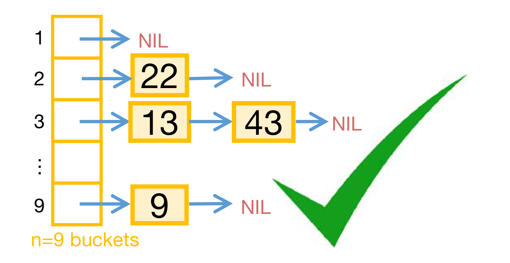
1, 2, 3, …, 9가 버킷 번호이며, 아래 노란 글씨 n=9 buckets가 버킷이 아홉 개임을 알려 줍니다. 각 버킷에서 나가는 파란 화살표는 연결 리스트의 포인터이고, 노란 상자는 키를 가진 노드, 분홍 글씨 NIL은 리스트의 끝입니다. 버킷 1은 비어 있어 곧바로 NIL을 가리키고, 버킷 2에는 22 하나가, 버킷 3에는 13과 43이 차례로 이어져 있으며, 버킷 9에는 9가 들어 있습니다. 키의 일의 자리 숫자가 곧 버킷 번호인 것을 볼 수 있는데(13과 43은 둘 다 3), 이것이 뒤에서 예시로 쓰는 해시 함수입니다. 오른쪽의 커다란 초록색 체크 표시는 이 구조가 이번 강의가 도달하려는 목표임을 나타냅니다.이어지는 개요(Outline) 슬라이드는 강의를 세 문장으로 요약합니다. 이 슬라이드는 강의 중에 네 번 나타나며, 파란 화살표가 그때마다 지금 다루는 항목을 가리킵니다.
- 해시 테이블(hash table)은 빠른 INSERT/DELETE/SEARCH를 지원하는 또 하나의 자료구조입니다.
- 자가 균형 이진 트리와 같은 일을 합니다.
- 다른 점은 무작위성(randomness)을 써서 기댓값으로는(in expectation) 더 좋은 성능을 얻을 수 있다는 것입니다.
- 해시 패밀리(hash family)는 해시 테이블 뒤에 숨은 마법입니다.
- 유니버설 해시 패밀리(universal hash family)는 그보다 더한 마법입니다.
세 문장이 차례로 §2, §3, §4의 주제이고, 화살표가 네 번째로 나타날 때에는 Recap을 가리킵니다(§5).
2. 해시 테이블 (Hash Tables)
2.1 목표 (Goal)
목표는 지난 강의와 같습니다.
키(key)를 가진 노드(node)들을 저장하면서 빠른 INSERT / DELETE / SEARCH를 지원하는 자료구조를 원합니다.
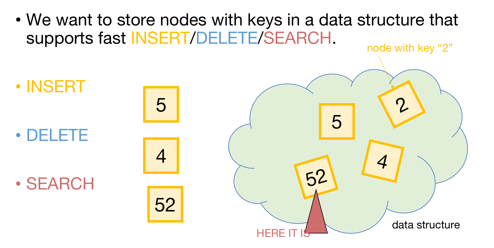
data structure)이고, 안에 든 노란 상자 5, 2, 4, 52가 저장된 노드들이며, 노란 주석 node with key “2”가 그중 하나를 가리켜 상자 안의 숫자가 키임을 알려 줍니다. 세 연산 이름 옆의 노란 상자 5, 4, 52는 각 연산이 대상으로 삼는 키의 예로, 5를 넣고 4를 지우고 52를 찾는 상황입니다(정적인 PDF여서 넣을 5와 지울 4가 모두 구름 안에 그려져 있습니다). 구름 속 52 아래의 분홍 삼각형과 글씨 HERE IT IS는 SEARCH가 찾아낸 노드를 가리킵니다. 자료구조를 구름으로 그린 것은 내부 구조가 아직 정해지지 않았다는 뜻이며, 이 구름 안을 어떻게 채워야 세 연산이 모두 빨라지는지가 강의 전체의 질문입니다.- INSERT(삽입): 키를 가진 노드를 자료구조에 넣습니다.
- DELETE(삭제): 주어진 키의 노드를 자료구조에서 뺍니다.
- SEARCH(탐색): 주어진 키의 노드가 자료구조 안에 있는지 찾습니다.
2.2 지난 시간과 오늘 (Last Time / Today)
같은 목표를 두고 지난 시간과 오늘이 내놓는 답은 보장의 성격이 다릅니다.
| 지난 시간: 자가 균형 트리 | 오늘: 해시 테이블 | |
|---|---|---|
| INSERT / DELETE / SEARCH | \(O(\log n)\) | \(O(1)\) |
| 보장의 성격 | 결정적(deterministic) | 기대 시간(expected time) |
| 최악의 경우 | 그대로 \(O(\log n)\) | 더 나쁨 |
| 슬라이드의 평 | #prettysweet |
#evensweeterinpractice |
- 결정적이라는 것은 알고리즘이 동전을 던지지 않으며, 어떤 입력이 와도 그 시간 안에 끝난다는 뜻입니다.
- 기대 시간이라는 것은 알고리즘이 스스로 무작위 선택을 하고, 그 선택에 대한 평균으로 시간을 잰다는 뜻입니다. 운이 나쁘면 더 오래 걸릴 수 있습니다.
- 해시 테이블은 최악의 경우 성능은 더 나쁘지만, 실전에서는 대개 훌륭합니다.
- 예: Python의
dict, Java의HashSet/HashMap, C++의unordered_map. - 해시 테이블은 데이터베이스, 캐싱 등에 쓰입니다(이 문장은 원본 슬라이드에서
object까지만 보이고 화면 아래로 잘려 있습니다).
- 예: Python의
2.3 \(O(1)\) 시간을 얻는 한 가지 방법 (One Way to Get O(1) Time)
\(O(1)\)을 얻는 가장 단순한 방법부터 봅니다. 모든 키가 집합 \(\{1, 2, 3, 4, 5, 6, 7, 8, 9\}\)에 속한다고 합시다. 그러면 버킷을 아홉 개 만들어 두고, 키 \(k\)를 \(k\)번 버킷에 넣으면 됩니다.
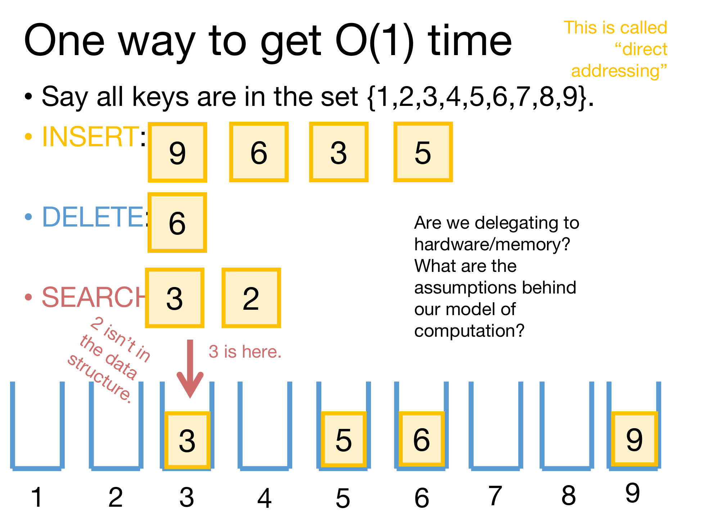
1–9 순으로 늘어놓았습니다. 키 \(k\)는 무조건 \(k\)번 버킷에 들어갑니다. 노란 글씨 INSERT 옆의 상자 9, 6, 3, 5가 차례로 삽입되는 키들이고, 파란 글씨 DELETE 옆의 6이 삭제되는 키, 분홍 글씨 SEARCH 옆의 3과 2가 탐색되는 키입니다. 분홍 화살표와 3 is here.는 3번 버킷을 들여다보면 3이 바로 있다는 것을, 기울어진 분홍 글씨 2 isn’t in the data structure.는 2번 버킷이 비어 있으므로 2가 없다는 것을 곧바로 알 수 있음을 나타냅니다. 어느 연산이든 버킷 하나만 보면 되므로 저장된 키의 수와 무관하게 \(O(1)\)입니다. 오른쪽 위 노란 글씨가 이 방법의 이름을 알려 주고, 가운데 검은 글씨는 우리가 하드웨어와 메모리에 일을 떠넘기고 있는 것은 아닌지, 우리의 계산 모형 뒤에 어떤 가정이 있는지를 묻습니다. PDF는 애니메이션의 한 장면만 담고 있어, 삭제된 뒤여야 할 6이 6번 버킷에 그대로 그려져 있습니다.- INSERT \(k\): \(k\)번 버킷에 넣습니다.
- DELETE \(k\): \(k\)번 버킷을 비웁니다.
- SEARCH \(k\): \(k\)번 버킷을 들여다봅니다. 들어 있으면 있는 것이고, 비어 있으면 없는 것입니다.
세 연산 모두 버킷 하나만 건드리므로 \(O(1)\)입니다. 이 방법을 직접 주소 지정(direct addressing)이라고 부릅니다. 키 자체가 저장 위치의 주소 노릇을 한다는 뜻입니다.
슬라이드 가운데의 검은 글씨는 여기에 질문을 하나 얹습니다 — 우리는 일을 하드웨어와 메모리에 떠넘기고 있는 것은 아닐까요? 우리의 계산 모형 뒤에는 어떤 가정이 있을까요? 슬라이드에 답은 적혀 있지 않으므로 표준적인 설명을 덧붙이겠습니다.
- 알고리즘 분석이 흔히 전제하는 RAM(random-access machine) 모형에서는, 배열의 몇 번째 칸인지만 알면 배열이 아무리 커도 그 칸을 \(O(1)\)에 읽고 쓸 수 있다고 가정합니다.
- “\(k\)번 버킷을 본다”가 \(O(1)\)인 것은 이 가정 덕분입니다. 뒤에서 “해시 함수의 값을 계산한 뒤 그 버킷으로 간다”를 \(O(1)\)로 셀 때에도 같은 가정이 쓰입니다.
2.4 어디서 본 모양입니다 (That Should Look Familiar)
- 이 방법은 6강의 CountingSort와 닮았습니다. 키가 가질 수 있는 값마다 자리를 하나씩 마련해 둔다는 점이 같습니다.
- 그래서 문제도 같습니다. 키가 \(U = \{1, 2, \ldots, 10000000000\}\) 같은 전체집합(universe)에서 올 수 있다면, 공간이 너무 많이 듭니다.
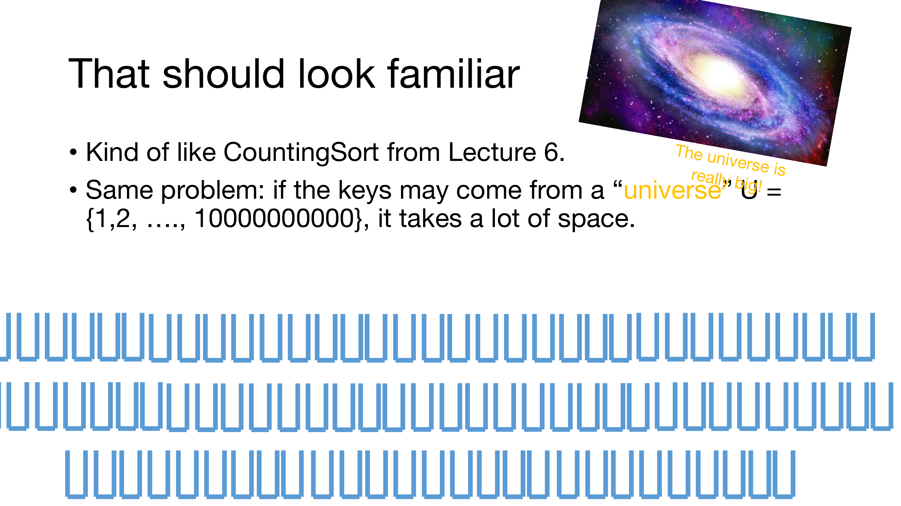
The universe is really big!는 universe라는 단어가 우주이기도 하다는 말장난입니다(원본에서 이 노란 글씨가 본문 둘째 항목과 겹쳐 인쇄되어 있습니다). 실제로 저장하는 키가 몇 개뿐이어도 버킷은 전체집합의 크기만큼 마련해야 한다는 것이 이 그림의 요점입니다.직접 주소 지정의 공간은 실제로 저장하는 키의 수가 아니라, 저장할 수 있는 키의 가짓수에 비례합니다. 저장할 키가 열 개뿐이어도 버킷은 \(10^{10}\)개를 마련해야 합니다.
2.5 해결책? (Solution?)
버킷 수를 줄여야 합니다. 첫 시도는 키의 숫자 한 자리만 보고 버킷을 정하는 것입니다. 버킷을 0부터 9까지 열 개만 두고, 키를 그 일의 자리 숫자에 해당하는 버킷에 넣습니다.
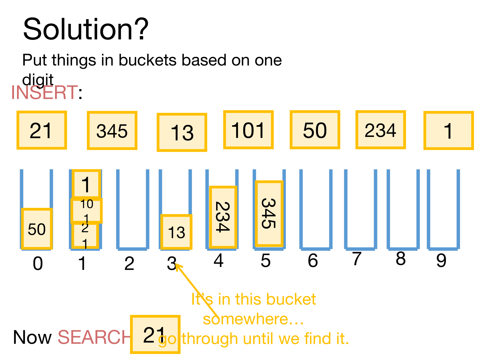
21, 345, 13, 101, 50, 234, 1이 삽입할 키들이고, 그 아래 파란 U자 버킷 열 개에 0부터 9까지 번호가 붙어 있습니다. 각 키는 일의 자리 숫자와 같은 번호의 버킷에 들어가서, 0번에 50, 1번에 21·101·1, 3번에 13, 4번에 234, 5번에 345가 쌓여 있고 나머지 버킷은 비어 있습니다(원본에서 1번 버킷의 101과 21은 상자가 좁아 숫자가 두 줄로 줄바꿈되어 있고, 234와 345는 세로로 돌려 넣었습니다). 맨 아래는 21을 SEARCH하는 장면으로, 노란 글씨대로 21은 그 키의 버킷 어딘가에 있으므로 찾을 때까지 그 버킷을 훑으면 됩니다. 원본에서 노란 화살표의 끝은 3번 버킷의 번호 근처에 놓여 있지만, 21이 실제로 들어 있는 곳은 1번 버킷입니다. 키의 범위가 아무리 넓어도 버킷은 열 개면 되는 대신, 한 버킷에 여러 키가 들어가 탐색이 버킷 하나를 훑는 일로 바뀌었습니다. 제목 아래와 맨 아래의 글씨들은 원본에서도 서로 겹쳐 있습니다.21, 345, 13, 101, 50, 234, 1을 차례로 넣은 결과는 다음과 같습니다.
| 버킷 | 0 | 1 | 2 | 3 | 4 | 5 | 6–9 |
|---|---|---|---|---|---|---|---|
| 들어 있는 키 | 50 | 21, 101, 1 | (없음) | 13 | 234 | 345 | (없음) |
- 이제 키의 범위가 아무리 넓어도 버킷은 열 개면 됩니다.
- 그 대가로 한 버킷에 여러 키가 들어갈 수 있습니다.
21을 SEARCH하려면 1번 버킷으로 가서, 그 안의 키들을 찾을 때까지 하나씩 확인해야 합니다. - 그래도 이 입력에서는 버킷마다 키가 많아야 세 개이므로 탐색이 빠릅니다.
2.6 문제… (Problem…)
그런데 입력이 22, 342, 12, 102, 52, 232, 2라면 어떨까요?
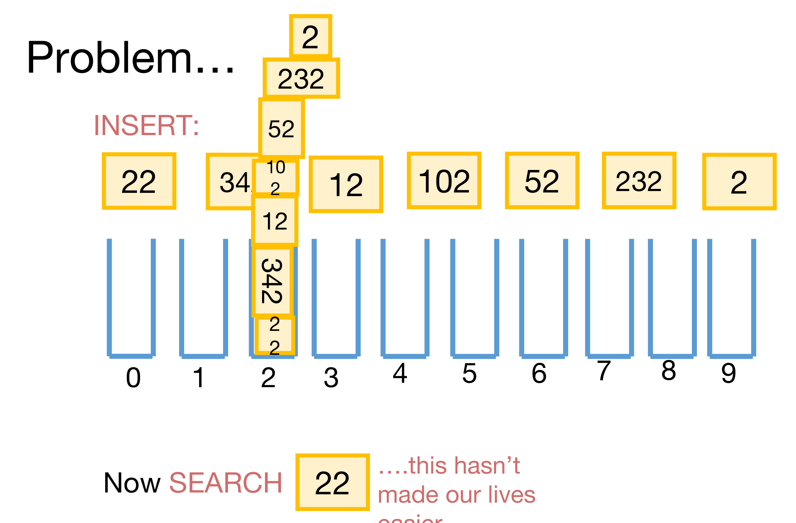
22, 342, 12, 102, 52, 232, 2(가운데 줄의 노란 상자들)는 일의 자리가 모두 2여서, 일곱 개가 전부 2번 버킷 하나에 쌓입니다. 2번 버킷 위로 상자들이 버킷 밖까지, 제목 옆 높이까지 탑처럼 솟아 있고 나머지 아홉 버킷은 비어 있습니다(상자가 좁아 22와 102는 숫자가 두 줄로 줄바꿈되어 있고 342는 세로로 돌려 넣었으며, 탑이 가운데 줄의 342 상자를 가리고 있습니다). 맨 아래는 22를 SEARCH하는 장면이고, 분홍 글씨는 이 방법이 우리 삶을 조금도 편하게 해 주지 못했다고 말합니다(마지막 줄은 원본에서도 화면 아래로 잘려 있습니다). 버킷 하나에 모든 키가 들어 있으면 탐색은 리스트 하나를 통째로 훑는 것과 같아져 \(O(n)\)이 됩니다.- 일곱 키의 일의 자리가 모두 2이므로, 전부 2번 버킷에 들어갑니다.
22를 SEARCH하려면 2번 버킷에 쌓인 키 전체를 훑어야 합니다. 버킷을 열 개나 두었지만 하나도 도움이 되지 않았습니다.- 키가 \(n\)개라면 탐색은 \(O(n)\)입니다. 지난 강의에서 본 (정렬되지 않은) 연결 리스트와 같은 처지입니다.
2.7 해시 테이블 (Hash Tables)
- 방금 본 것이 해시 테이블(hash table)의 한 예입니다.
- 다만 그다지 좋은 예는 아닙니다.
- 앞으로는 버킷에 나눠 담는 방식을 더 영리하게, 그리고 덜 결정적으로(less deterministic) 정할 것입니다.
- 그 결과 기대 시간(expected time)으로 빠른 INSERT/DELETE/SEARCH를 얻습니다.
“덜 결정적으로”라는 말이 강의의 방향을 예고합니다. 앞의 방법이 무너진 것은 “일의 자리 숫자”라는 규칙이 고정되어 있고 누구나 알 수 있어서, 그 규칙에 맞춰 나쁜 입력을 만들 수 있었기 때문입니다.
2.8 먼저 용어부터 (But First! Terminology)
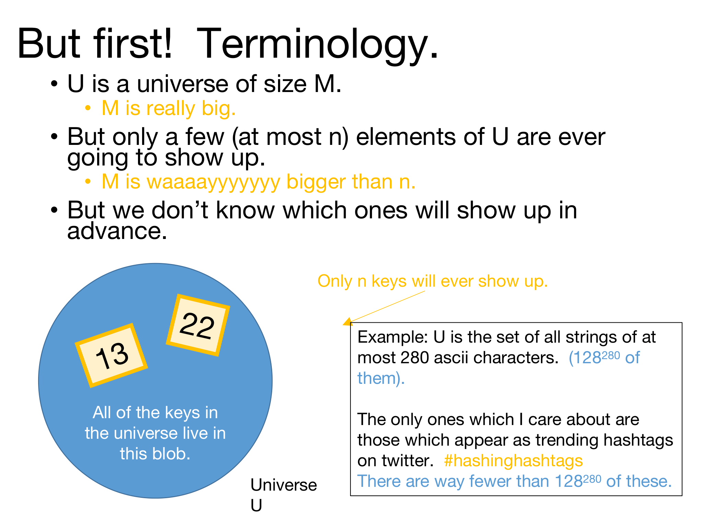
13과 22가 실제로 등장하는 키들입니다. 노란 글씨 Only n keys will ever show up.와 화살표가 이 키들을 가리킵니다. 오른쪽 상자는 예시입니다 — \(U\)가 길이 280 이하의 ASCII 문자열 전체이면 그 수는 \(128^{280}\)개이지만(파란 글씨), 관심 있는 것은 트위터의 인기 해시태그로 등장하는 문자열뿐이고 그 수는 \(128^{280}\)보다 훨씬 적습니다. 노란 글씨 #hashinghashtags는 해시태그를 해싱한다는 말장난입니다.- \(U\)는 크기 \(M\)인 전체집합(universe)입니다.
- \(M\)은 정말 큽니다.
- 그러나 \(U\)의 원소 가운데 실제로 등장하는 것은 몇 개뿐(많아야 \(n\)개)입니다.
- \(M\)은 \(n\)보다 훨씬 큽니다.
- 다만 어느 원소가 등장할지는 미리 알 수 없습니다.
슬라이드의 예에서 \(U\)는 길이 280 이하의 ASCII 문자열 전체입니다. ASCII 문자는 128가지이므로 길이가 정확히 280인 문자열만 세어도 \(128^{280}\)개이고, 더 짧은 것까지 합쳐도 자릿수는 달라지지 않습니다.
\[128^{280} = \bigl(2^{7}\bigr)^{280} = 2^{1960}\]
이 가운데 우리가 신경 쓰는 것은 인기 해시태그로 등장하는 문자열뿐이고, 그 수는 \(128^{280}\)과 비교할 수 없이 적습니다.
세 번째 조건이 문제를 어렵게 만듭니다. 어느 \(n\)개가 등장할지 미리 안다면, 그 \(n\)개에 1부터 \(n\)까지 번호를 매겨 직접 주소 지정을 쓰면 됩니다. 모르기 때문에, \(U\)의 어떤 원소가 오더라도 버킷 번호를 정해 줄 수 있는 규칙이 필요합니다.
2.9 해시 함수 (Hash Functions)
그 규칙이 해시 함수입니다.
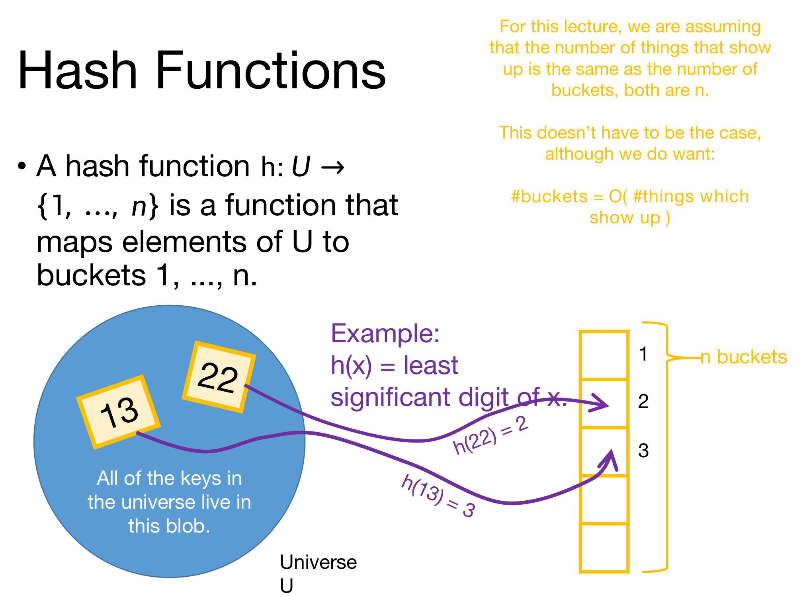
n buckets)이고 위에서부터 1, 2, 3의 번호가 붙어 있습니다. 보라색 글씨가 예시 함수 — \(h(x)\)는 \(x\)의 일의 자리 숫자 — 를 적고 있고, 보라색 곡선 화살표 두 개가 이 함수의 동작을 보여 줍니다. 22는 2번 버킷으로 가고(\(h(22) = 2\)), 13은 3번 버킷으로 갑니다(\(h(13) = 3\)). 오른쪽 위 노란 글씨는 이 강의의 가정을 밝힙니다 — 등장하는 원소의 수와 버킷의 수가 둘 다 \(n\)으로 같다고 가정하며, 꼭 그래야 하는 것은 아니지만 버킷의 수가 등장하는 원소 수의 상수배 이내이기는 해야 합니다. 원본에서 보라색 예시 문장의 끝이 화살표와 겹쳐 있습니다.- 해시 함수(hash function) \(h: U \to \{1, \ldots, n\}\)은 \(U\)의 원소를 버킷 \(1, \ldots, n\)으로 보내는 함수입니다.
- 예: \(h(x)\)를 \(x\)의 일의 자리 숫자(least significant digit)로 정합니다. 이때 \(h(13) = 3\), \(h(22) = 2\)입니다.
오른쪽 위의 노란 글씨는 이 강의가 두는 가정입니다.
- 이 강의에서는 등장하는 원소의 수와 버킷의 수가 같고, 둘 다 \(n\)이라고 가정합니다.
- 꼭 그래야 하는 것은 아닙니다. 다만 다음은 바랍니다.
\[\#\text{buckets} \;=\; O(\,\#\text{things which show up}\,)\]
버킷이 등장하는 원소보다 터무니없이 많으면 §2.4의 공간 문제로 되돌아가기 때문입니다.
| 기호 | 뜻 |
|---|---|
| \(U\) | 전체집합(universe) — 등장할 수 있는 모든 키의 집합 |
| \(M\) | \(U\)의 크기. 매우 큽니다 |
| \(n\) | 실제로 등장하는 키의 수(의 상한)이자 버킷의 수. \(M\)은 \(n\)보다 훨씬 큽니다 |
| \(u_1, \ldots, u_n\) | 실제로 등장하는 키들. 어느 것이 올지 미리 알 수 없습니다 |
| \(h: U \to \{1, \ldots, n\}\) | 해시 함수 — 키를 버킷 번호로 보냅니다 |
2.10 체이닝을 쓰는 해시 테이블 (Hash Tables (with Chaining))
\(M\)이 \(n\)보다 크므로, 어떤 \(h\)를 쓰더라도 전체집합 안에는 같은 버킷으로 가는 서로 다른 두 키가 반드시 있습니다. 이렇게 두 키가 한 버킷에서 만나는 일을 충돌(collision)이라 하며, 충돌한 키들을 어떻게 저장할지 정해 두어야 합니다. 이 강의가 쓰는 방식이 체이닝(chaining)입니다.
- 버킷 \(n\)개의 배열을 둡니다.
- 각 버킷은 연결 리스트(linked list)를 하나씩 저장합니다.
- 연결 리스트에는 \(O(1)\) 시간에 삽입할 수 있습니다.
- 연결 리스트에서 무언가를 찾는 데에는 \(O(\text{length(list)})\) 시간이 걸립니다.
- 해시 함수 \(h: U \to \{1, \ldots, n\}\)을 하나 정합니다.
- 예: \(h(x)\)는 \(x\)의 일의 자리 숫자.
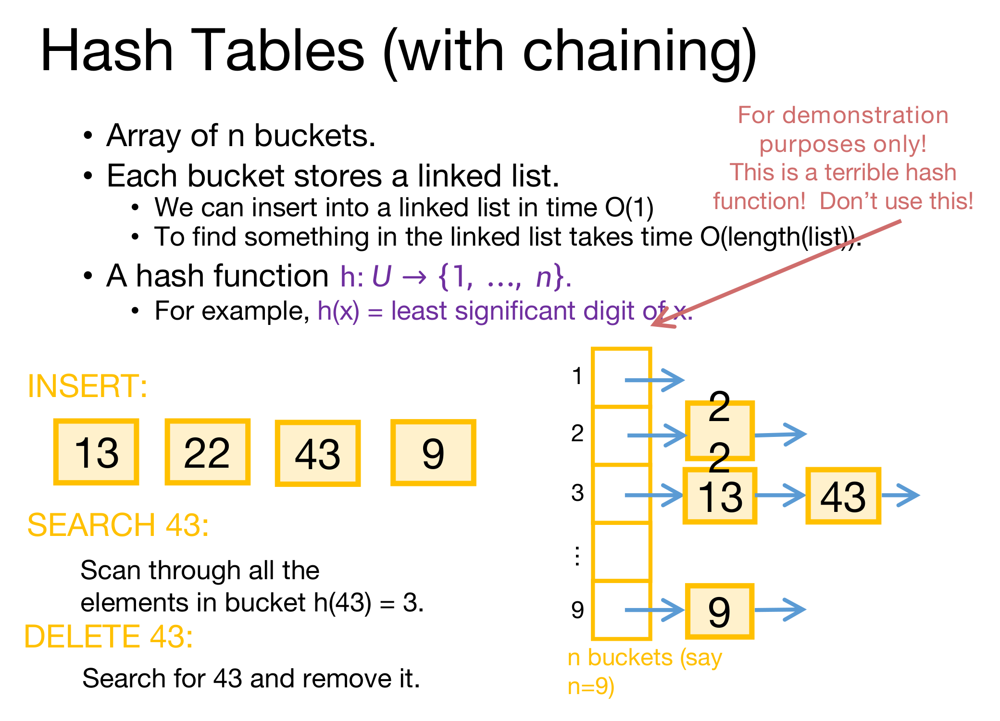
13, 22, 43, 9를 차례로 넣으면 2번 버킷에 22, 3번 버킷에 13과 43, 9번 버킷에 9가 달립니다(원본에서 22는 상자 안에서 두 줄로 줄바꿈되어 있습니다). SEARCH 43은 버킷 \(h(43) = 3\)의 원소를 모두 훑는 것이고, DELETE 43은 43을 찾은 뒤 떼어 내는 것입니다. 한 버킷에 여러 키가 와도 리스트로 이어 붙이면 되므로 충돌이 저장을 막지는 않지만, 그 리스트의 길이가 곧 탐색 시간이 됩니다.세 연산은 다음과 같이 동작합니다.
| 연산 | 하는 일 | 시간 |
|---|---|---|
| INSERT \(x\) | 버킷 \(h(x)\)의 연결 리스트에 \(x\)를 넣는다 | \(O(1)\) |
| SEARCH \(x\) | 버킷 \(h(x)\)의 리스트를 처음부터 훑는다 | \(O(\text{length(list)})\) |
| DELETE \(x\) | \(x\)를 SEARCH한 뒤 리스트에서 떼어 낸다 | \(O(\text{length(list)})\) |
- 슬라이드의 예:
13, 22, 43, 9를 넣은 뒤SEARCH 43은 버킷 \(h(43) = 3\)의 원소를 모두 훑고,DELETE 43은43을 찾아 제거합니다. - 슬라이드는 예시로 쓴 “일의 자리 숫자”에 대해 시연용일 뿐이며, 끔찍한 해시 함수이니 쓰지 말라고 못 박아 둡니다. §2.6에서 본 대로입니다.
- 그림은 3번 버킷을 들어온 순서대로
13 → 43으로 그렸지만, 리스트 안에서의 순서는 중요하지 않습니다. 맨 앞에 끼워 넣든 맨 뒤에 붙이든(꼬리 포인터를 두면 됩니다) 삽입은 \(O(1)\)입니다.
정리하면 모든 연산의 시간은 그 키가 속한 버킷의 리스트 길이로 결정됩니다.
\[\text{키 } x\text{에 대한 연산의 시간} \;=\; O\bigl(1 + (\text{버킷 } h(x)\text{에 달린 리스트의 길이})\bigr)\]
여기서 1은 \(h(x)\)를 계산하고 그 버킷으로 가는 비용입니다. 이 식이 뒤의 분석 전체의 출발점입니다.
2.11 여담: 개방 주소법 (Aside: Hash Tables with Open Addressing)
- 앞 슬라이드는 체이닝을 쓰는 해시 테이블에 관한 것이었습니다.
- 개방 주소법(open addressing)이라는 것도 있습니다.
- 이 수업에서는 그것을 몰라도 됩니다.
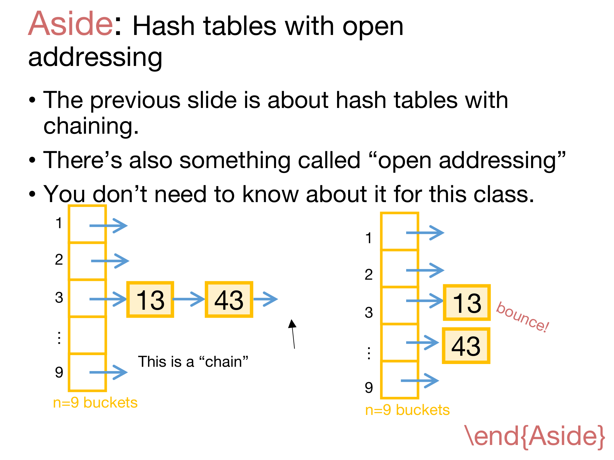
13을 거쳐 43으로 이어지며, 검은 글씨와 화살표가 이 줄을 chain이라고 부릅니다. 오른쪽은 개방 주소법으로, 13이 3번 버킷을 차지하고 있어서 같은 버킷으로 온 43이 튕겨 나가(분홍 글씨 bounce!) 그 아래의 다른 버킷에 자리를 잡습니다. 두 그림 모두 버킷은 \(n = 9\)개입니다. 체이닝은 충돌한 키들을 버킷에 매단 리스트에 이어 붙이고, 개방 주소법은 표 안의 다른 버킷으로 보낸다는 차이를 보여 줍니다. 오른쪽 아래 분홍 글씨 \end{Aside}는 여담이 끝났다는 표시입니다.그림에서 읽을 수 있는 차이는 하나입니다. 체이닝은 같은 버킷에 온 키들을 리스트로 이어 붙이고, 개방 주소법은 버킷 하나에 키를 하나만 두되 자리가 차 있으면 다른 버킷으로 튕겨 보냅니다. 슬라이드는 여담 뒤에 §2.10의 슬라이드를 한 번 더 보여 주며 체이닝으로 돌아옵니다.
2.12 해시 테이블에 바라는 것 (What We Want from a Hash Table)
- 버킷이 많지 않기를 바랍니다(예컨대 \(n\)개).
- 공간을 너무 많이 쓰지 않는다는 뜻입니다.
- 원소들이 버킷에 꽤 고르게 퍼져 있기를 바랍니다.
- SEARCH/INSERT/DELETE가 빠르다는 뜻입니다.
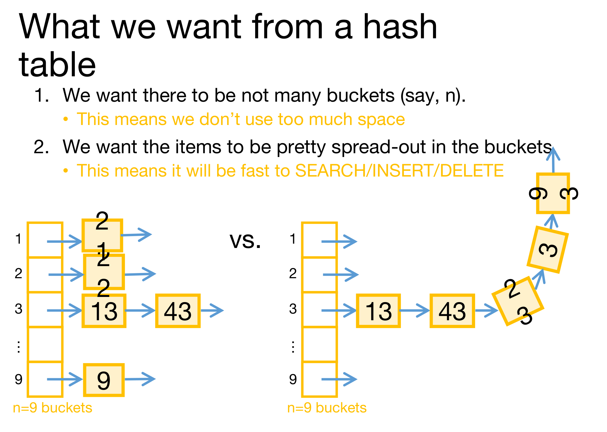
21, 2번에 22, 3번에 13과 43, 9번에 9가 달려 어느 리스트도 길지 않은 바람직한 모습입니다. vs. 건너편의 오른쪽은 13, 43, 23, 3, 93이 모두 3번 버킷의 리스트 하나에 이어져 있고, 줄이 너무 길어 화면 오른쪽 위로 휘어 올라갑니다. 두 표는 버킷 수가 같아 공간은 똑같이 쓰지만, 오른쪽에서는 탐색이 리스트 전체를 훑어야 합니다. 원본에서 21, 22, 23, 93은 상자 안에서 숫자가 두 줄로 줄바꿈되어 있습니다.두 요구는 서로 반대쪽으로 당깁니다. 지금까지 본 방법들을 이 두 기준으로 놓으면 다음과 같습니다.
| 방법 | 버킷 수 (요구 1) | 퍼짐 (요구 2) |
|---|---|---|
| 직접 주소 지정 | \(M\)개 — 실패 | 버킷마다 많아야 1개 — 완벽 |
| 일의 자리 숫자로 해싱 | 10개 — 만족 | 입력에 따라 전부 한 버킷 — 실패 |
| 원하는 것 | \(n\)개 | 버킷마다 \(O(1)\)개 |
2.13 최악의 경우 분석 (Worst-Case Analysis)
이 수업이 늘 해 온 대로, 최악의 경우를 기준으로 목표를 세워 봅니다.
- 목표: 다음을 만족하는 함수 \(h: U \to \{1, \ldots, n\}\)을 설계합니다.
- 악당(bad guy)이 \(U\)에서 어떤 \(n\)개의 원소를 고르더라도, 버킷들이 균형 잡혀(balanced) 있다.
- 여기서 균형 잡혀 있다는 것은 버킷마다 원소가 \(O(1)\)개라는 뜻입니다.
- 이런 함수가 있다면 \(O(1)\) INSERT/DELETE/SEARCH라는 꿈이 이루어집니다.
슬라이드는 묻습니다 — 그런 함수를 생각해 낼 수 있나요?
2.14 이것은 불가능합니다 (This Is Impossible!)
어떤 결정적(deterministic) 해시 함수도 최악의 입력을 이길 수 없습니다.
일의 자리 숫자라는 특정한 함수가 나빴던 것이 아닙니다. 미리 정해 둔 함수라면 무엇이든 §2.6과 같은 입력이 존재합니다.
여기서는 정말로 악당을 이길 수 없습니다 (We Really Can’t Beat the Bad Guy Here)
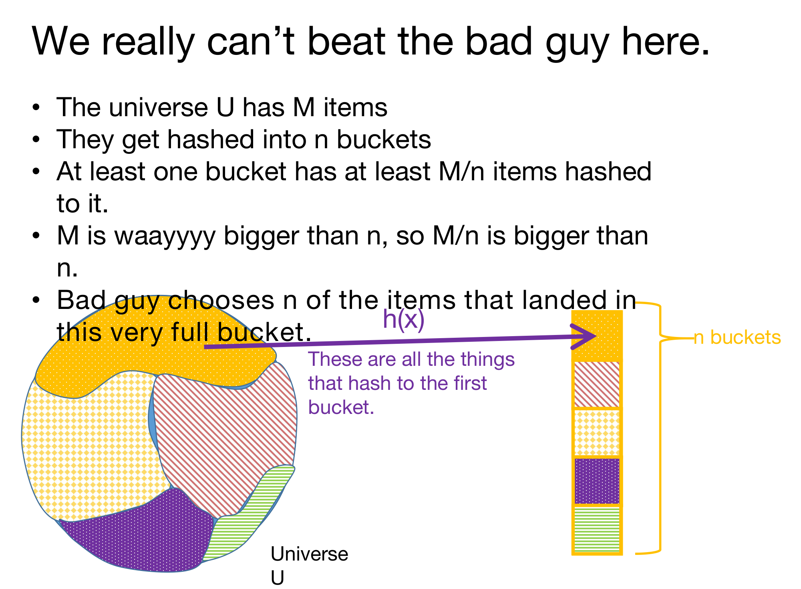
슬라이드의 논증은 다섯 줄입니다.
- 전체집합 \(U\)에는 \(M\)개의 원소가 있습니다.
- 이들은 \(n\)개의 버킷으로 해싱됩니다.
- 적어도 한 버킷에는 \(M/n\)개 이상의 원소가 해싱됩니다.
- \(M\)은 \(n\)보다 훨씬 크므로, \(M/n\)은 \(n\)보다 큽니다.
- 악당은 이 꽉 찬 버킷에 떨어지는 원소 가운데 \(n\)개를 고릅니다.
셋째 줄이 비둘기집 원리(pigeonhole principle)입니다. 단계별로 풀어 보겠습니다. 버킷 \(k\)로 가는 원소들의 집합을 \(B_k = \{x \in U : h(x) = k\}\)라 쓰겠습니다(슬라이드에는 없는 기호이며, 그림에서 색칠된 영역 하나가 \(B_k\) 하나입니다).
1단계. \(h\)가 함수이므로 \(U\)의 원소는 저마다 정확히 한 버킷으로 갑니다. 따라서 \(B_1, \ldots, B_n\)은 \(U\)를 빠짐없이, 겹치지 않게 나눕니다.
\[\lvert B_1\rvert + \lvert B_2\rvert + \cdots + \lvert B_n\rvert \;=\; M\]
2단계 (비둘기집 원리). 모든 \(k\)에 대해 \(\lvert B_k\rvert < M/n\)이라면 좌변이 \(n \cdot (M/n) = M\)보다 작아져 모순입니다. 따라서 다음을 만족하는 버킷 \(k^*\)가 적어도 하나 있습니다.
\[\lvert B_{k^*}\rvert \;\ge\; \frac{M}{n}\]
3단계. \(M \ge n^2\)이면 \(M/n \ge n\)입니다. “\(M\)이 \(n\)보다 훨씬 크다”는 설정이 여기서 쓰입니다. 그러면 \(B_{k^*}\)에는 원소가 \(n\)개 이상 들어 있습니다.
4단계. \(h\)는 고정되어 있고 악당은 그것을 알고 있으므로, 악당은 \(B_{k^*}\)를 계산해 그 안에서 \(n\)개를 골라 넣을 수 있습니다. \(n\)개가 모두 버킷 \(k^*\)의 리스트 하나에 달리고, 그 리스트에서의 SEARCH는 최악의 경우 \(n\)개를 모두 지나야 하므로 \(\Theta(n)\)이 걸립니다.
이 논증은 \(h\)가 어떤 함수인지를 전혀 묻지 않습니다. 쓰인 것은 \(h\)가 미리 정해져 있다는 사실과 \(M \ge n^2\)뿐입니다.
2.15 해결책: 무작위성 (Solution: Randomness)
결정적인 함수가 모두 실패한다면, 남은 길은 결정적이지 않은 함수입니다. 슬라이드는 빨간 주사위 두 개와 함께 한 단어를 내놓습니다 — 무작위성(randomness).
앞 절에서 악당이 이긴 것은 \(h\)를 알고 있었기 때문입니다. 가장 붐비는 버킷이 어느 것이고 거기에 어떤 원소들이 가는지는 \(h\)를 알아야 계산할 수 있습니다. 악당이 입력을 정하는 시점에 \(h\)가 아직 정해지지 않았다면, 이 공격은 성립하지 않습니다.
2.16 게임 (The Game)
무작위성을 쓰는 알고리즘을 최악의 경우로 분석하려면, 누가 무엇을 언제 정하는지를 분명히 해야 합니다. 슬라이드는 이것을 세 단계의 게임으로 정리합니다.
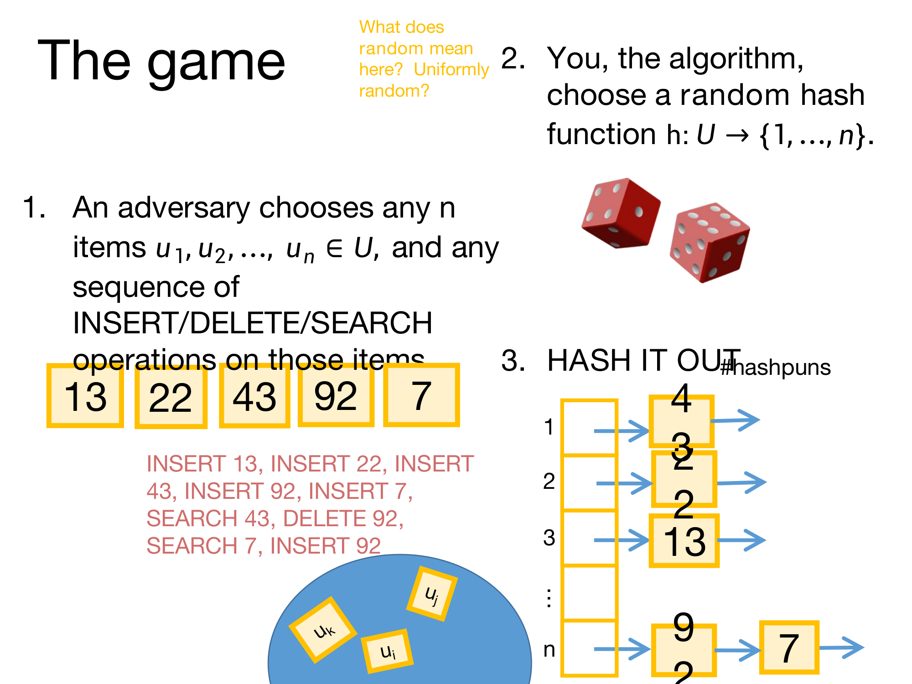
13, 22, 43, 92, 7이 고른 원소의 예이고, 분홍 글씨가 연산 순서의 예입니다(INSERT 13, INSERT 22, INSERT 43, INSERT 92, INSERT 7, SEARCH 43, DELETE 92, SEARCH 7, INSERT 92). 아래 파란 타원은 전체집합 \(U\)이며, 그 안의 상자 \(u_i, u_j, u_k\)가 적대자가 고른 원소들을 일반적으로 나타냅니다. 2단계에서 알고리즘이 무작위 해시 함수 \(h: U \to \{1, \ldots, n\}\)을 고르며, 빨간 주사위 두 개가 그 무작위 선택을 나타냅니다. 위쪽 노란 글씨는 여기서 무작위가 무슨 뜻인지, 균등 무작위인지를 묻습니다. 3단계 HASH IT OUT에서 실제로 연산을 수행하며, 오른쪽 표가 다섯 원소를 넣은 결과의 한 예입니다 — 1번 버킷에 43, 2번에 22, 3번에 13, \(n\)번에 92와 7. 순서가 핵심입니다: 적대자는 \(h\)가 뽑히기 전에 입력을 정해야 합니다. 원본에서 1단계 글의 마지막 줄이 노란 상자들과 겹쳐 있고, 아래쪽 타원과 92 상자는 화면 밖으로 잘려 있습니다.- 적대자(adversary)가 임의의 \(n\)개 원소 \(u_1, u_2, \ldots, u_n \in U\)와, 그 원소들에 대한 INSERT/DELETE/SEARCH 연산의 임의의 순서를 고릅니다.
- 알고리즘(우리)이 무작위 해시 함수 \(h: U \to \{1, \ldots, n\}\)을 고릅니다.
- 실제로 해싱합니다(
HASH IT OUT— 슬라이드는#hashpuns라는 태그를 붙여 말장난임을 밝힙니다).
이 게임에서 읽어야 할 것은 세 가지입니다.
- 순서가 핵심입니다. 적대자는 1단계에서, 곧 \(h\)가 뽑히기 전에 입력을 확정해야 합니다. 적대자는 알고리즘이 \(h\)를 어떤 방식으로 뽑는지는 알 수 있어도, 주사위가 실제로 무엇을 냈는지는 모릅니다.
- 적대자는 여전히 최악을 고릅니다. 입력이 무작위라고 가정하는 것이 아닙니다. 무작위인 것은 알고리즘의 선택뿐이고, 성능은 그 선택에 대한 기댓값으로 잽니다.
- 슬라이드의 노란 글씨가 남은 질문을 던집니다 — 여기서 “무작위”란 무슨 뜻일까요? 균등 무작위일까요?
2.17 무작위 해시 함수의 예 (Example of a Random Hash Function)
가장 먼저 떠오르는 답은 균등 무작위 함수(uniformly random function)입니다. \(h: U \to \{1, \ldots, n\}\)이 균등 무작위 함수라는 것은 다음을 뜻합니다(\(U\)의 원소에 \(1, 2, \ldots, M\)의 번호를 붙였습니다).
- \(h(1)\)은 1과 \(n\) 사이의 균등 무작위 수입니다.
- \(h(2)\)도 1과 \(n\) 사이의 균등 무작위 수이며, \(h(1)\)과 독립입니다.
- \(h(3)\)도 1과 \(n\) 사이의 균등 무작위 수이며, \(h(1), h(2)\)와 독립입니다.
- …
- \(h(M)\)도 1과 \(n\) 사이의 균등 무작위 수이며, \(h(1), h(2), \ldots, h(M-1)\)과 독립입니다.
곧 \(n\)면 주사위를 \(M\)번 굴려 \(U\)의 원소마다 버킷을 하나씩 정해 주는 것입니다. 슬라이드 위쪽의 작은 그림은 전체집합 \(U\)에서 \(n\)개의 버킷으로 가는 화살표 \(h\) 옆에 주사위를 그려, \(h\) 자체가 무작위로 정해진다는 것을 나타냅니다.
한 가지 짚어 둘 점이 있습니다. 주사위는 \(h\)를 정할 때 굴리는 것이지, 연산을 할 때마다 굴리는 것이 아닙니다. 일단 정해진 \(h\)는 보통의 함수여서, 같은 키를 넣으면 언제나 같은 버킷이 나옵니다. 그렇지 않다면 INSERT할 때 넣은 버킷과 SEARCH할 때 들여다보는 버킷이 달라져, 넣은 것을 찾을 수 없습니다.
2.18 무작위성은 도움이 됩니다 (Randomness Helps)
- 직관: 악당은 아직 알지 못하는 해시 함수를 무너뜨릴 수 없습니다.
- 그런데 정말 그럴까요? 무작위 함수를 높은 확률로 무너뜨리는 어떤 전략이 있다면 어떻게 될까요?
- 그래서 분석이 좀 필요합니다.
직관만으로 부족한 이유는 이렇습니다. 악당이 \(h\)를 모르더라도, \(h\)가 될 수 있는 후보의 대부분에서 나쁘게 작동하는 입력이 있다면 악당은 그 입력을 내면 됩니다. §3.4에서 실제로 그런 예를 봅니다. 무작위로 고른다는 것만으로는 충분하지 않고, 어떤 집합에서 고르는지가 중요합니다.
2.19 무엇을 바라는가 (What Do We Want?)
분석하려면 먼저 무엇을 보이고 싶은지를 정확히 적어야 합니다.
\(u_i\)의 버킷에 많은 원소가 몰리면 나쁩니다. 그러니 그렇지 않기를 바랍니다.
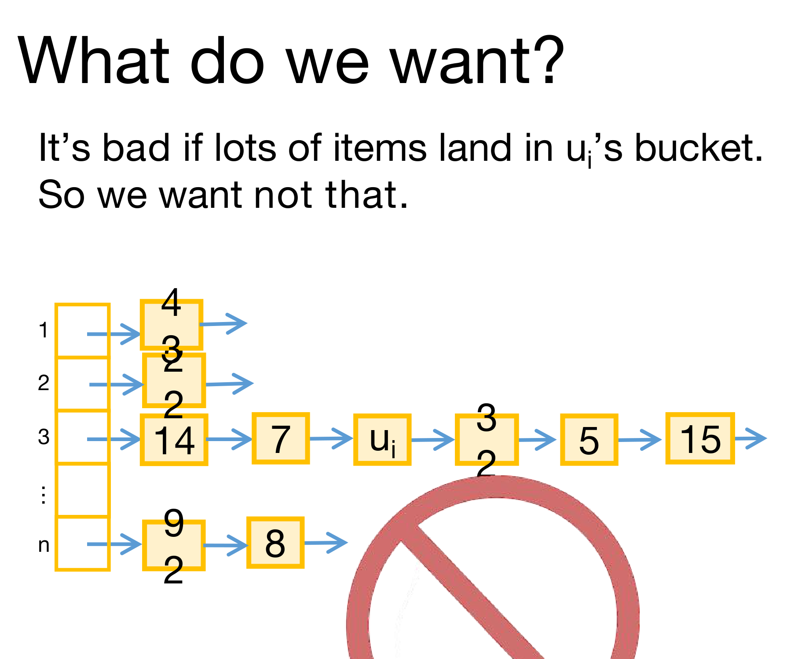
43, 2번에는 22, \(n\)번에는 92와 8이 있는데, 3번 버킷에는 14, 7, \(u_i\), 32, 5, 15의 여섯 노드가 한 줄로 길게 이어져 있습니다. 관심 있는 원소 \(u_i\)가 하필 이 붐비는 버킷에 들어 있어서, \(u_i\)를 찾으려면 앞의 노드들을 차례로 지나가야 합니다. 오른쪽 아래의 붉은 금지 표시가 이것이 바라지 않는 모습임을 나타냅니다(원본에서 표시의 아래쪽은 화면 밖으로 잘려 있고, 43, 22, 32, 92는 상자 안에서 숫자가 두 줄로 줄바꿈되어 있습니다). 기준이 표 전체의 모양이 아니라 \(u_i\)가 속한 버킷이라는 점이 뒤에 나오는 정확한 조건으로 이어집니다.더 정확히는 (More Precisely)
- 바라는 것: 악당이 해시 테이블에 넣을 \(u_1, u_2, \ldots, u_n\)을 어떻게 고르든, 그리고 모든 \(i \in \{1, \ldots, n\}\)에 대해
\[\mathbb{E}\bigl[\,u_i\text{의 버킷에 든 원소의 수}\,\bigr] \;\le\; 2\]
- 그렇다면: \(u_i\)에 관한 INSERT/DELETE/SEARCH 연산 각각에 대해
\[\mathbb{E}\bigl[\,\text{연산의 시간}\,\bigr] \;=\; O(1)\]
슬라이드는 둘째 식 옆에 이것이 강의 첫머리에서 원했던 것이라고 적어 둡니다. 세 가지를 덧붙입니다.
- 왜 2인가. 슬라이드의 주석에 따르면, 여기의 2는 아무 상수로 바꿔도 여전히 좋습니다. 다만 2가 편리합니다. 왜 편리한지는 §2.21의 계산에서 드러납니다.
- 기댓값은 무엇에 대한 것인가. \(u_1, \ldots, u_n\)은 적대자가 1단계에서 정해 둔 고정된 값이고, 무작위인 것은 2단계에서 뽑는 \(h\)뿐입니다. 기댓값은 \(h\)의 선택에 대한 평균입니다.
- “\(u_i\)의 리스트의 기대 길이”와 “가장 긴 리스트의 기대 길이”는 다릅니다. 슬라이드 아래쪽의 검은 글씨가 이 점을 짚고, 후자가 얼마인지를 질문으로 남깁니다. 슬라이드에 답은 없지만, 균등 무작위 해시 함수로 \(n\)개의 키를 \(n\)개의 버킷에 넣을 때 가장 긴 리스트의 기대 길이는 \(\Theta(\log n / \log\log n)\)임이 알려져 있습니다(공 \(n\)개를 상자 \(n\)개에 무작위로 던지는 문제의 표준 결과입니다). 곧 어딘가에는 상수보다 긴 리스트가 생기지만, 적대자는 \(h\)를 보기 전에 \(u_i\)를 정해야 하므로 그 긴 리스트를 겨냥할 수 없습니다.
이어지는 슬라이드들(So we want:)은 여담 하나를 사이에 두고 이 조건을 두 번 다시 적습니다.
2.20 여담: 버킷 \(i\)와 \(u_i\)의 버킷 (Aside)
조건을 적을 때 “\(u_i\)의 버킷”이라는 다소 번거로운 표현을 쓴 데에는 이유가 있습니다.
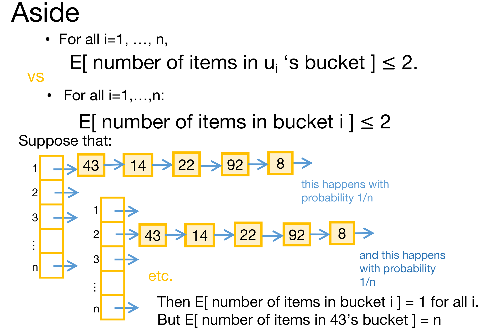
vs 아래의 조건은 모든 \(i\)에 대해 버킷 \(i\)에 든 원소 수의 기댓값이 2 이하라는 것입니다. 아래 그림이 둘을 가르는 예입니다. 첫 번째 해시 테이블에서는 43, 14, 22, 92, 8이 모두 1번 버킷에 이어져 있고, 파란 글씨가 이 일이 확률 \(1/n\)로 일어난다고 말합니다. 겹쳐 그려진 두 번째 표에서는 같은 원소들이 모두 2번 버킷에 있고 이것도 확률 \(1/n\)이며, 노란 글씨 etc.는 3번부터 \(n\)번 버킷까지도 마찬가지라는 뜻입니다. 아래 두 줄이 결론입니다 — 이때 버킷 \(i\)에 든 원소 수의 기댓값은 모든 \(i\)에 대해 1이지만, 43의 버킷에 든 원소 수의 기댓값은 \(n\)입니다. 버킷을 기준으로 한 조건은 만족하는데도 모든 원소가 늘 한 줄에 몰려 있는 것입니다.다음 두 조건은 비슷해 보이지만 다릅니다.
- (가) 모든 \(i\)에 대해 \(\;\mathbb{E}[\,u_i\text{의 버킷에 든 원소의 수}\,] \le 2\)
- (나) 모든 \(i\)에 대해 \(\;\mathbb{E}[\,\text{버킷 } i\text{에 든 원소의 수}\,] \le 2\)
우리가 바라는 것은 (가)입니다. (나)는 성립하더라도 연산이 빠르다는 보장이 되지 못합니다.
슬라이드의 예는 이렇습니다. 확률 \(1/n\)로 모든 원소가 1번 버킷에 가고, 확률 \(1/n\)로 모든 원소가 2번 버킷에 가고, … 이런 식이라고 합시다. 곧 모든 키를 같은 버킷으로 보내되, 그 버킷만 무작위로 정하는 해시 함수입니다. 원소가 \(n\)개일 때 두 기댓값을 계산하면 다음과 같습니다.
\[\mathbb{E}[\,\text{버킷 } i\text{에 든 원소의 수}\,] \;=\; \underbrace{\frac{1}{n}}_{\text{버킷 } i\text{가 뽑힘}} \cdot\, n \;+\; \Bigl(1 - \frac{1}{n}\Bigr) \cdot 0 \;=\; 1\]
\[\mathbb{E}[\,43\text{의 버킷에 든 원소의 수}\,] \;=\; n\]
- (나)는 넉넉히 성립합니다 — 어느 버킷이든 기댓값이 1입니다.
- 그런데
43이 어느 버킷에 가든 나머지 원소도 전부 그 버킷에 있으므로,43을 찾는 데에는 언제나 길이 \(n\)의 리스트를 훑어야 합니다.
(나)가 약한 이유는 단순합니다. \(n\)개의 원소가 \(n\)개의 버킷 어딘가에 들어 있으니, 버킷들의 원소 수를 모두 더하면 어떤 해시 함수에서든 \(n\)입니다. 버킷 하나당 평균은 언제나 1이고, 이 숫자는 원소들이 고르게 퍼져 있는지 한 줄로 몰려 있는지를 전혀 구별하지 못합니다. 연산의 비용을 결정하는 것은 “임의의 버킷”이 아니라 지금 찾는 키가 들어 있는 바로 그 버킷입니다.
2.21 \(u_i\)의 버킷에 든 원소 수의 기댓값 (Expected Number of Items in \(u_i\)’s Bucket?)
이제 \(h\)가 균등 무작위일 때 이 기댓값을 계산합니다.
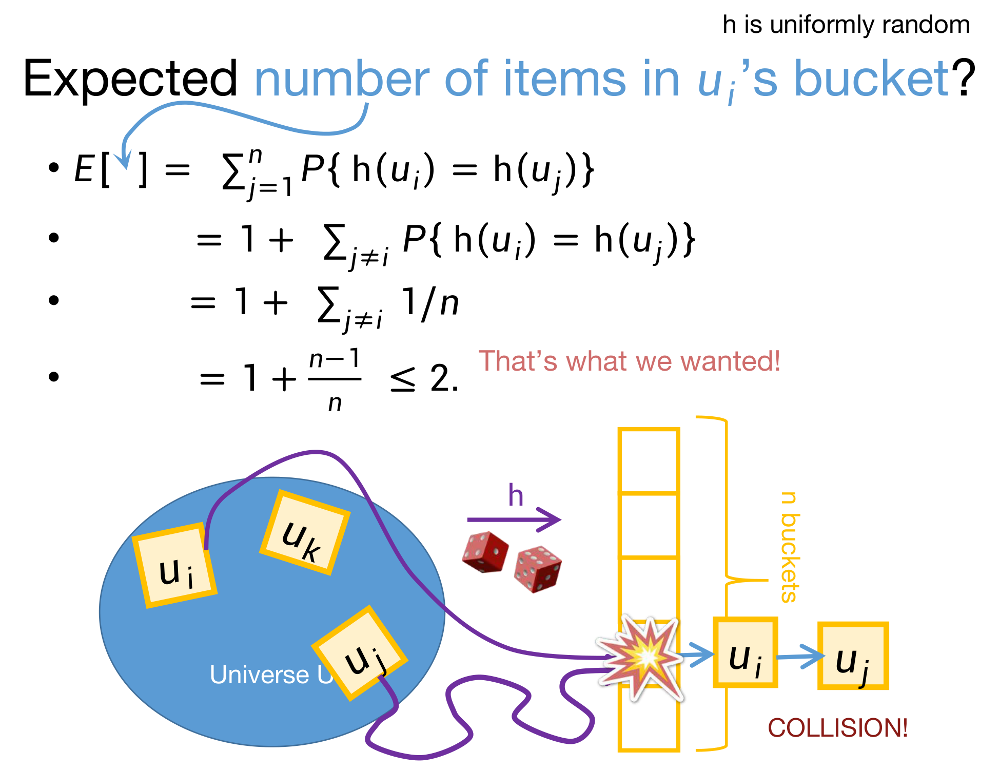
COLLISION!이 충돌, 곧 \(h(u_i) = h(u_j)\)를 나타내며, 그 결과 \(u_i\)와 \(u_j\)가 한 리스트에 나란히 달립니다.슬라이드의 계산은 네 줄입니다.
\[ \begin{aligned} \mathbb{E}\bigl[\,u_i\text{의 버킷에 든 원소의 수}\,\bigr] &= \sum_{j=1}^{n} P\{\,h(u_i) = h(u_j)\,\} \\ &= 1 + \sum_{j \ne i} P\{\,h(u_i) = h(u_j)\,\} \\ &= 1 + \sum_{j \ne i} \frac{1}{n} \\ &= 1 + \frac{n-1}{n} \;\le\; 2 \end{aligned} \]
각 줄이 어디서 나오는지 풀어 보겠습니다.
첫째 줄 — 지시 확률변수와 기댓값의 선형성. 각 \(j\)에 대해 지시 확률변수(indicator random variable) \(X_j\)를 다음과 같이 둡니다(슬라이드에는 없는 기호입니다).
\[ X_j = \begin{cases} 1 & h(u_j) = h(u_i) \text{ 인 경우} \\ 0 & \text{그 외의 경우} \end{cases} \]
\(u_i\)의 버킷에 든 원소는 \(u_i\)와 같은 버킷으로 해싱된 \(u_j\)들이므로 그 수는 \(\sum_{j=1}^{n} X_j\)입니다. 지시 확률변수의 기댓값은 그 사건의 확률이고, 기댓값의 선형성(linearity of expectation)에 의해 합의 기댓값은 기댓값의 합입니다.
\[\mathbb{E}\Bigl[\sum_{j=1}^{n} X_j\Bigr] = \sum_{j=1}^{n} \mathbb{E}[X_j] = \sum_{j=1}^{n} P\{\,h(u_i) = h(u_j)\,\}\]
기댓값의 선형성은 \(X_j\)들이 서로 독립이 아니어도 성립합니다. 이 점이 §4에서 중요해집니다.
둘째 줄 — \(j = i\)인 항. \(u_i\)는 자기 자신과 언제나 같은 버킷에 있으므로 \(P\{h(u_i) = h(u_i)\} = 1\)입니다. 이 항을 따로 빼냅니다.
셋째 줄 — 충돌 확률. \(j \ne i\)이면 \(u_i\)와 \(u_j\)는 서로 다른 원소이므로, \(h(u_i)\)와 \(h(u_j)\)는 독립이고 각각 \(\{1, \ldots, n\}\)에서 균등합니다. 두 값이 같을 확률은, 둘 다 버킷 \(k\)일 확률을 모든 \(k\)에 대해 더한 것입니다.
\[P\{\,h(u_i) = h(u_j)\,\} = \sum_{k=1}^{n} P\{\,h(u_i) = k\,\} \cdot P\{\,h(u_j) = k\,\} = \sum_{k=1}^{n} \frac{1}{n} \cdot \frac{1}{n} = \frac{1}{n}\]
넷째 줄. \(j \ne i\)인 항은 \(n - 1\)개이므로 합은 \((n-1)/n\)이고, 이것은 1보다 작습니다.
\[1 + \frac{n-1}{n} \;=\; 2 - \frac{1}{n} \;\le\; 2\]
§2.19의 “2가 편리하다”는 말이 이것입니다. 자기 자신의 몫 1에, 나머지 원소들의 몫이 합쳐서 1 미만으로 더해집니다.
한 가지 확인해 둘 점이 있습니다. 어느 시점에 해시 테이블에 실제로 들어 있는 것은 \(u_1, \ldots, u_n\)의 일부입니다(아직 삽입되지 않았거나 이미 삭제된 것이 있을 수 있습니다). 따라서 그 시점에 \(u_i\)의 버킷에 달린 리스트의 길이는 \(\sum_j X_j\)를 넘지 않고, 위의 상한은 연산 순서와 무관하게 언제나 유효합니다.
2.22 균등 무작위 해시 함수는 버킷을 균형 있게 만듭니다 (A Uniformly Random Hash Function Leads to Balanced Buckets)
- 방금 보인 것: 악당이 해시 테이블에 넣을 \(u_1, u_2, \ldots, u_n\)을 어떻게 고르든, 모든 \(i \in \{1, \ldots, n\}\)에 대해
\[\mathbb{E}\bigl[\,u_i\text{의 버킷에 든 원소의 수}\,\bigr] \;\le\; 2\]
- 이것이 뜻하는 것: 악당이 어떤 연산 순서와 원소를 고르더라도
\[\mathbb{E}\bigl[\,\text{INSERT/DELETE/SEARCH의 시간}\,\bigr] \;=\; O(1)\]
- 그러니 우리의 해결책은: 균등 무작위 해시 함수를 고른다?
둘째 항목은 §2.10의 식에 기댓값을 취하면 나옵니다. \(u_i\)에 대한 연산의 시간은 \(O(1 + (\text{리스트의 길이}))\)이고 리스트의 기대 길이가 2 이하이므로, 기대 시간은 \(O(1 + 2) = O(1)\)입니다.
마지막 항목 끝의 물음표가 다음 절의 주제입니다.
2.23 이 계획의 문제점 (What’s Wrong with This Plan?)
슬라이드는 힌트를 줍니다.
균등 무작위 함수 \(h: U \to \{1, \ldots, n\}\)을 어떻게 구현하고, 어떻게 저장하시겠습니까?
그리고 옆에 균등 무작위 함수의 정의(§2.17)를 다시 적어 둡니다 — \(h(1)\)은 균등 무작위 수이고, \(h(2)\)는 그것과 독립인 균등 무작위 수이고, …. 값들이 서로 독립이라는 것은, 하나의 값을 알아도 다른 값에 대해 알 수 있는 것이 전혀 없다는 뜻입니다. 그렇다면 \(h\)를 다시 쓰기 위해서는 값들을 하나하나 전부 적어 두는 수밖에 없어 보입니다. (이 슬라이드의 마지막 항목은 \(h(n)\)으로 적혀 있는데, §2.17의 슬라이드와 맞추어 보면 \(h(M)\)을 뜻하는 것으로 읽힙니다.)
2.24 균등 무작위 해시 함수는 좋은 생각이 아닙니다 (A Uniformly Random Hash Function Is Not a Good Idea)
균등 무작위 해시 함수를 저장하고 계산하려면 룩업 테이블(lookup table)을 써야 합니다.
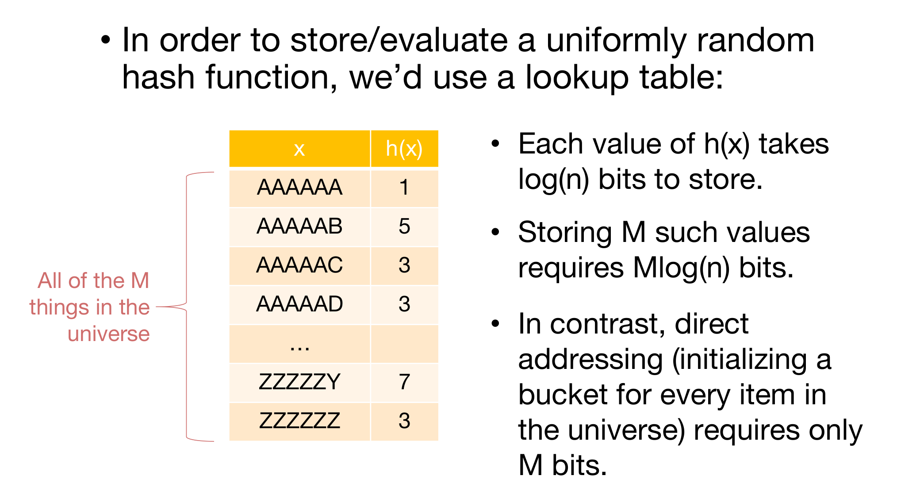
x에는 전체집합의 원소가 AAAAAA, AAAAAB, AAAAAC, AAAAAD, …, ZZZZZY, ZZZZZZ처럼 하나도 빠짐없이 나열되고, 오른쪽 열 h(x)에는 그 원소가 갈 버킷 번호(1, 5, 3, 3, …, 7, 3)가 적힙니다. 값들에 규칙이 없는 것은 각 값을 따로따로 무작위로 뽑았기 때문입니다. 왼쪽의 분홍 중괄호와 글씨가 이 표의 행이 전체집합의 \(M\)개 원소 전부임을 나타냅니다. 오른쪽 세 항목이 비용을 셉니다 — \(h(x)\)의 값 하나를 저장하는 데 \(\log(n)\) 비트가 들고, 그런 값을 \(M\)개 저장하므로 \(M\log(n)\) 비트가 필요하며, 이에 비해 전체집합의 원소마다 버킷을 하나씩 마련하는 직접 주소 지정은 \(M\) 비트면 됩니다. 공간을 아끼려고 해시 테이블을 택했는데, 해시 함수를 적어 두는 데에만 직접 주소 지정보다 더 많은 공간이 든다는 것이 요점입니다.- \(h(x)\)의 값 하나는 \(1\)부터 \(n\)까지의 수이므로, 저장하는 데 \(\log(n)\) 비트가 듭니다.
- 그런 값을 \(M\)개 저장하려면 \(M\log(n)\) 비트가 필요합니다.
- 이에 비해 직접 주소 지정 — 전체집합의 원소마다 버킷을 하나씩 마련하는 것 — 은 \(M\) 비트면 됩니다.
곧 공간이 너무 많이 든다고 버렸던 직접 주소 지정보다도 \(\log n\)배 더 많은 공간을 씁니다. §2.12의 요구 1(공간)을 위해 해시 함수를 들여왔는데, 그 해시 함수를 기억하는 비용이 요구 1을 무너뜨린 것입니다.
2.25 다르게 말하면 (Another Way to Say This)
- 해시 함수는 아주 많습니다.
- 정확히 \(n^M\)개 있습니다.
- 그 가운데 무작위로 고른 하나를 적어 두려면 \(\log(n^M)\) 비트가 들고, 이것이 \(M\log(n)\)입니다.
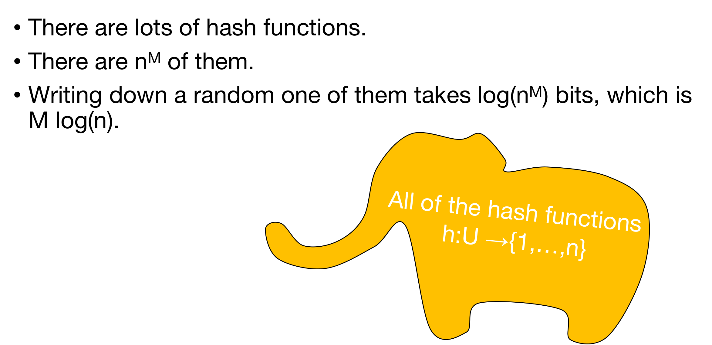
개수 \(n^M\)은 곱의 법칙에서 나옵니다. 함수 하나를 정한다는 것은 \(U\)의 원소 \(M\)개 각각에 대해 버킷을 \(n\)가지 가운데 하나로 정하는 것이고, 이 선택들은 서로 독립적으로 할 수 있습니다.
\[\underbrace{n \times n \times \cdots \times n}_{M\text{번}} \;=\; n^{M}, \qquad \log_2\bigl(n^{M}\bigr) \;=\; M\log_2 n\]
2.26 또 다른 생각… (Another Thought…)
오른쪽 위에 THIS SLIDE SKIPPED IN CLASS라고 적혀 있듯 수업에서는 건너뛴 장이지만, 자연스럽게 떠오르는 우회책을 다루고 있어 옮겨 둡니다.
- 아이디어: \(h\)의 값을 \(M\)개 모두 적어 둘 필요가 있을까요? 실제로 등장한 키에서만 \(h\)를 기억하면 됩니다.
- 슬라이드 왼쪽의 “지금의 알고리즘(Algorithm now)”은 키
13, 22, 43, 92, 7이 처음 등장할 때마다 주사위를 굴려 버킷을 정합니다 — 예컨대 \(h(13) = 6\), \(h(22) = 3\). - 오른쪽의 “나중의 알고리즘(Algorithm later)”은 그 값들을 기억하고 있어야 합니다 — 생각 구름 속의 \(h(13) = 6\), \(h(22) = 3\), \(h(43) = 2\), \(h(92) = 3\), \(h(7) = 8\).
- 슬라이드 왼쪽의 “지금의 알고리즘(Algorithm now)”은 키
- 문제: 그러려면 키와 값을 저장하면서 \(O(1)\) INSERT/DELETE/SEARCH를 지원하는 방법이 필요합니다….
슬라이드는 이 대목에 탄식하는 만화 그림을 붙여 두었습니다. 키를 주면 기억해 둔 값을 빠르게 돌려주는 자료구조 — 그것이 바로 지금 만들려는 해시 테이블이기 때문입니다. 해시 테이블을 만드는 데 해시 테이블이 필요한, 순환 논리입니다. (이 슬라이드는 글자들이 서로 겹치고 이미지 하나가 검은 사각형으로 깨져 있어 그림으로 싣지 않았습니다.)
2.27 룩업 테이블 없이 저장할 수 있을까 (Could We Store a Uniformly Random \(h\) without Using a Lookup Table?)
룩업 테이블은 \(h\)를 저장하는 한 가지 방법일 뿐입니다.
어쩌면 공간을 덜 쓰면서 \(h\)를 저장하는 다른 방법이 있지 않을까요?
슬라이드는 이 질문을 던진 뒤, 답을 하기 위한 여담으로 넘어갑니다.
2.28 여담: 기술 길이 (Aside: Description Length)
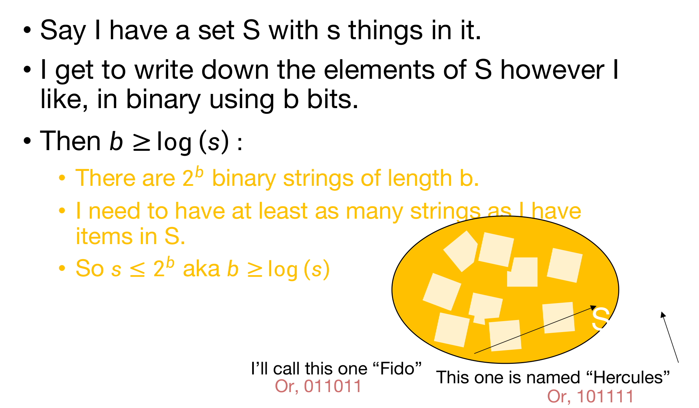
Fido 또는 분홍 글씨의 이진 문자열 011011, 다른 하나는 Hercules 또는 101111입니다. 원소마다 서로 다른 이름을 붙여야 구별할 수 있으므로, 이름의 가짓수가 원소의 수보다 적어서는 안 된다는 것을 보여 줍니다. 원본에서 둘째 노란 항목이 타원과 겹쳐 있습니다.- 원소가 \(s\)개인 집합 \(S\)가 있다고 합시다.
- \(S\)의 원소들을 \(b\)비트의 이진 문자열로 적되, 어떻게 적을지는 마음대로 정할 수 있습니다.
- 그러면 \(b \ge \log(s)\)여야 합니다.
- 길이 \(b\)인 이진 문자열은 \(2^b\)개입니다.
- 문자열은 적어도 \(S\)의 원소 수만큼 있어야 합니다.
- 따라서 \(s \le 2^b\), 곧 \(b \ge \log(s)\)입니다.
\[s \;\le\; 2^{b} \quad\Longleftrightarrow\quad b \;\ge\; \log_2 s\]
이것도 비둘기집 원리입니다. 이름(문자열)이 원소보다 적으면 어떤 두 원소는 같은 이름을 갖게 되고, 그러면 이름만 보고는 둘을 구별할 수 없습니다. 핵심은 “어떻게 적을지는 마음대로”라는 대목입니다. 아무리 영리한 부호화를 쓰더라도 이 하한을 벗어날 수 없습니다.
2.29 무작위 해시 함수를 저장하려면 \(M\log(n)\) 비트가 필요합니다 (We Need \(M\log(n)\) Bits to Store a Random Hash Function)
여담 뒤에 §2.27의 질문이 한 번 더 나오고, 슬라이드의 답은 한 단어입니다 — 안 됩니다(NOPE). 이어지는 슬라이드(이 장도 수업에서는 건너뛰었습니다)가 앞 절의 여담으로 이유를 댑니다.
- 코끼리 모양의 덩어리가 모든 해시 함수의 집합을 나타낸다고 합시다.
- 그 크기는 \(n^M\)입니다. 정말 큽니다.
- 무작위 해시 함수 하나를 적어 두려면 \(\log(n^M) = M\log(n)\) 비트가 필요합니다.
기술 길이의 여담에 \(S\) = (모든 해시 함수의 집합), \(s = n^M\)을 넣은 것입니다.
\[b \;\ge\; \log_2 s \;=\; \log_2\bigl(n^{M}\bigr) \;=\; M\log_2 n\]
§2.24와 다른 점은 결론의 세기입니다. §2.24는 룩업 테이블이라는 특정한 저장 방식의 비용을 센 것이고, 여기서는 어떤 저장 방식으로도 그보다 줄일 수 없다는 하한을 말합니다.
슬라이드 아래쪽의 작은 글씨는 이 논증의 빈틈을 스스로 짚습니다 — 엄밀하게는 무작위 해시 함수를 뽑을 때 평균적으로 \(M\log(n)\) 비트가 필요하다는 것을 논증해야 하며, 어떤 원소에는 아주 긴 이름을 주고 다른 원소들에는 짧은 이름을 주면 안 되느냐는 것입니다. 슬라이드는 질문으로 남겼으므로 표준적인 세기 논증을 덧붙이겠습니다.
- 길이가 \(\ell\) 비트 미만인 이진 문자열은 모두 합쳐 \(2^{0} + 2^{1} + \cdots + 2^{\ell - 1} = 2^{\ell} - 1\)개뿐입니다.
- \(\ell\)을 \(2^{\ell} \le s/2\)를 만족하는 가장 큰 정수로 잡으면 \(\ell > \log_2 s - 2\)이고, 이름이 \(\ell\) 비트보다 짧은 원소는 \(s/2\)개보다 적습니다.
- 따라서 적어도 절반의 원소는 이름이 \(\ell\) 비트 이상입니다. 균등하게 뽑은 원소의 이름은 확률 \(1/2\) 이상으로 \(\ell\) 비트 이상이므로, 기대 길이는 \(\ell/2 > (\log_2 s - 2)/2\) 이상입니다.
\(s = n^M\)을 넣으면 이름의 기대 길이는 \(\Omega(M\log n)\)입니다. 짧은 이름을 몇 개에게 몰아주더라도, 짧은 이름 자체가 몇 개 없기 때문에 평균은 거의 줄지 않습니다.
2.30 해결책 (Solution)
\(n^M\)개 가운데 하나를 가리키는 이름이 짧을 수 없다면, 방법은 하나입니다.
더 작은 함수 집합에서 고릅니다.
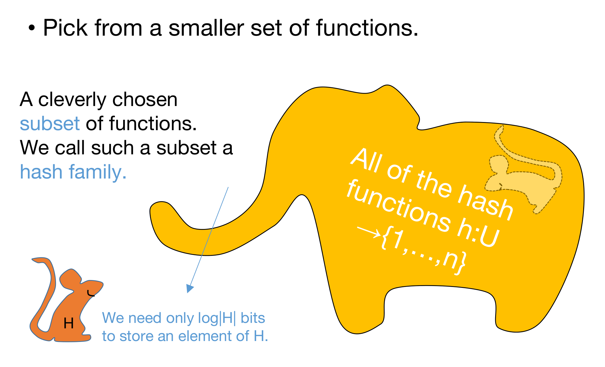
- 모든 함수 가운데서 고르는 대신, 영리하게 고른 부분집합 \(H\) 안에서만 고릅니다.
- 그런 부분집합을 해시 패밀리(hash family)라고 부릅니다.
- \(H\)의 원소 하나를 저장하는 데에는 \(\log\lvert H\rvert\) 비트면 됩니다.
§2.28의 하한은 “\(s\)개 가운데 하나를 가리키려면 \(\log s\) 비트”였습니다. 하한을 피할 수는 없지만, \(s\)를 줄일 수는 있습니다. 남은 문제는 \(H\)를 작게 줄이면서도 §2.21의 좋은 성질을 잃지 않는 것입니다.
3. 해시 패밀리 (Hash Families)
개요 슬라이드가 다시 나타나고, 화살표가 둘째 항목 — 해시 패밀리는 해시 테이블 뒤에 숨은 마법이다 — 을 가리킵니다.
3.1 해시 패밀리 (Hash Families)
해시 패밀리(hash family)는 해시 함수들의 모임(collection)입니다.
“모든 해시 함수 \(h: U \to \{1, \ldots, n\}\)의 집합”도 해시 패밀리의 한 예입니다.
정의 자체에는 아무 조건이 없습니다. 해시 함수를 모아 놓기만 하면 해시 패밀리입니다. 이 용어로 다시 말하면, §2.17의 “균등 무작위 해시 함수를 뽑는다”는 것은 가장 큰 해시 패밀리(코끼리 전체)에서 균등하게 하나를 뽑는다는 것과 같습니다. 이제 해시 함수를 뽑는 방식은 모두 “어떤 해시 패밀리 \(H\)를 정해 두고, 그 안에서 균등하게 하나를 뽑는다”는 한 가지 틀로 적을 수 있고, 달라지는 것은 \(H\)뿐입니다.
3.2 예: 더 작은 해시 패밀리 (Example: A Smaller Hash Family)
코끼리보다 훨씬 작은 해시 패밀리의 예를 하나 봅니다. 슬라이드는 코끼리 안에 점선으로 그린 쥐와, 그것을 밖으로 꺼낸 주황색 쥐 \(H\)를 다시 보여 줍니다.
- \(H = \{\,\)일의 자리 숫자(least significant digit)를 돌려주는 함수, 맨 앞자리 숫자(most significant digit)를 돌려주는 함수\(\,\}\)
- \(H\)에서 \(h\)를 무작위로 고릅니다.
- 어느 쪽을 골랐는지 기억하는 데에는 1비트면 됩니다.
\(\lvert H\rvert = 2\)이므로 \(\log_2\lvert H\rvert = 1\)비트입니다. \(M\log n\) 비트에 비하면 저장 문제는 완벽하게 해결되었습니다. 다만 슬라이드는 오른쪽 위에 분홍 글씨로 못 박아 둡니다 — 이것은 여전히 끔찍한 생각이니 이 예를 쓰지 말 것, 오직 설명을 위한 것이라고.
3.3 게임 (The Game)
이 해시 패밀리로 §2.16의 게임을 다시 해 봅니다. 슬라이드는 두 함수에 이름을 붙입니다.
- \(h_0\) =
Most_significant_digit(맨 앞자리 숫자) - \(h_1\) =
Least_significant_digit(일의 자리 숫자) - \(H = \{h_0, h_1\}\)
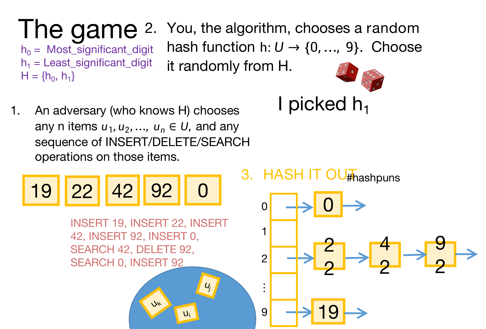
Most_significant_digit), \(h_1\)은 일의 자리 숫자(Least_significant_digit)입니다. 1단계에서 적대자는 이번에는 \(H\)를 아는 상태로 \(n\)개의 원소와 연산 순서를 고르고, 2단계에서 알고리즘은 해시 함수 \(h: U \to \{0, \ldots, 9\}\)를 \(H\)에서 무작위로 고릅니다. 주사위 아래의 I picked h1이 뽑힌 결과입니다. 노란 상자 19, 22, 42, 92, 0이 적대자가 고른 원소, 분홍 글씨가 연산 순서이고, 오른쪽 표(버킷 번호 0–9)가 다섯 원소를 \(h_1\)로 해싱한 결과입니다 — 0번에 0, 2번에 22·42·92, 9번에 19. 세 키가 2번 버킷에 몰리기는 했지만 나머지는 흩어져 있습니다. 원본에서 22, 42, 92는 상자 안에서 숫자가 두 줄로 줄바꿈되어 있고, 아래쪽 파란 타원은 화면 밖으로 잘려 있습니다.게임의 규칙에서 달라진 곳은 두 군데입니다.
- 적대자가 임의의 \(n\)개 원소와 연산 순서를 고릅니다. 이때 적대자는 \(H\)를 알고 있습니다.
- 알고리즘이 해시 함수 \(h: U \to \{0, \ldots, 9\}\)를 \(H\)에서 무작위로 고릅니다.
- 실제로 해싱합니다.
- 버킷은
0부터9까지 열 개이므로 여기서는 \(n = 10\)입니다. - 적대자가 \(H\)를 안다고 가정하는 것은 §2.16과 같은 맥락입니다. 알고리즘이 어떻게 뽑는지는 공개되어 있고, 감춰진 것은 주사위의 결과뿐입니다. \(H\)가 작으므로 감춰진 것은 이제 1비트뿐입니다.
- 슬라이드의 예에서 적대자는
19, 22, 42, 92, 0을 골랐고 알고리즘은 \(h_1\)을 뽑았습니다. 그 결과22, 42, 92가 2번 버킷에 몰렸습니다. \(h_0\)이 뽑혔다면 다섯 키의 맨 앞자리 숫자가1, 2, 4, 9, 0으로 모두 달라 하나도 충돌하지 않았을 것입니다.
3.4 그다지 좋은 해시 패밀리가 아닙니다 (This Is Not a Very Good Hash Family)
앞의 예에서는 \(h_0\)이 뽑혔다면 충돌이 하나도 없었을 것입니다. 적대자가 입력을 제대로 고르지 못했다는 뜻이고, 슬라이드도 그렇게 말합니다 — 앞 슬라이드에서 적대자는 훨씬 더 적대적일 수 있었습니다….
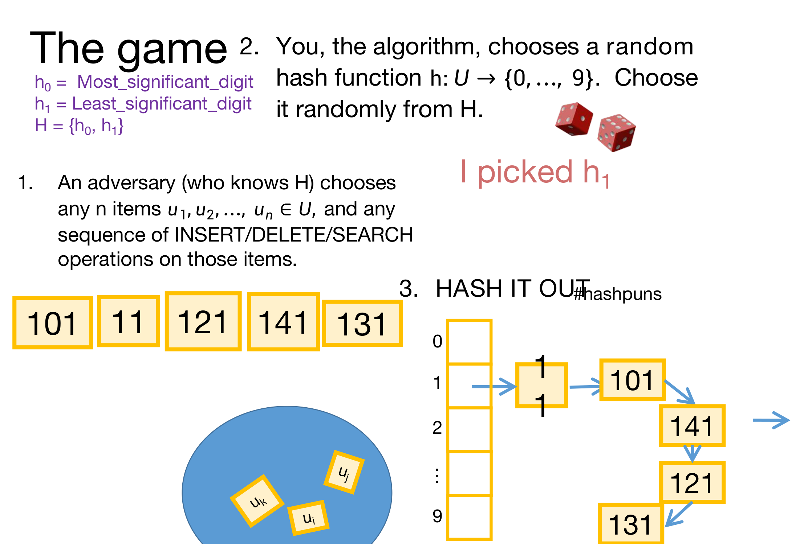
101, 11, 121, 141, 131입니다. 이 다섯 수는 맨 앞자리 숫자도 1, 일의 자리 숫자도 1이어서, \(h_0\)으로 해싱하든 \(h_1\)으로 해싱하든 1번 버킷으로 갑니다. 분홍 글씨 I picked h1은 이번에도 \(h_1\)이 뽑혔음을 말하지만, 어느 쪽이 뽑혔어도 결과는 같습니다. 오른쪽 표에서 1번 버킷의 리스트가 11, 101, 141, 121, 131의 순서로 이어지며, 너무 길어 아래로 꺾여 내려갑니다. 적대자가 \(h\)를 모르더라도 \(H\)를 알기만 하면 \(H\)의 모든 함수에서 동시에 충돌하는 키들을 고를 수 있다는 것이 이 그림의 요점입니다. 원본에서 11은 상자 안에서 두 줄로 줄바꿈되어 있고, 오른쪽의 파란 화살표 하나는 리스트에서 떨어져 그려져 있습니다.- 적대자가
101, 11, 121, 141, 131을 고릅니다. - 다섯 수 모두 맨 앞자리 숫자가 1이고 일의 자리 숫자도 1입니다.
- 따라서 \(h_0\)이 뽑히든 \(h_1\)이 뽑히든 전부 1번 버킷으로 갑니다.
§2.18에서 제기한 걱정이 현실이 되었습니다. 해시 함수를 무작위로 골랐고 적대자는 그 결과를 모르지만, 주사위가 무엇을 내든 상관없는 입력이 있었던 것입니다. 무작위성만으로는 충분하지 않고, \(H\)가 갖춰야 할 성질이 따로 있습니다.
| 해시 패밀리 | 크기 | \(h\)를 저장하는 비트 | 최악의 입력에 대해 |
|---|---|---|---|
| 모든 함수 (코끼리) | \(n^M\) | \(M\log n\) | 버킷의 기대 크기 2 이하 |
| \(\{h_0, h_1\}\) | 2 | 1 | 모든 키가 한 버킷에 |
| 찾는 것 | 작다 | 적다 | 버킷의 기대 크기 2 이하 |
4. 유니버설 해시 패밀리 (Universal Hash Families)
개요 슬라이드가 세 번째로 나타나고, 화살표가 마지막 항목 — 유니버설 해시 패밀리는 그보다 더한 마법이다 — 을 가리킵니다.
4.1 해시 패밀리를 어떻게 고를까 (How to Pick the Hash Family?)
- 분명히 앞의 예처럼은 아닙니다.
- 앞서 했던 그 계산으로 돌아가 봅시다….
코끼리 전체는 성질은 좋지만 너무 크고, \(\{h_0, h_1\}\)은 작지만 성질이 나쁩니다. 그 사이에서 무엇을 남겨야 하는지 알려면, 코끼리가 왜 좋았는지를 다시 들여다봐야 합니다.
4.2 그 계산으로 돌아가서 (Expected Number of Items in \(u_i\)’s Bucket?)
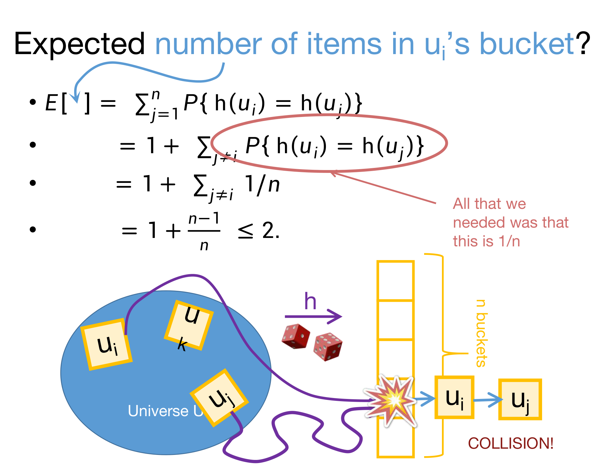
§2.21의 네 줄에서 \(h\)가 균등 무작위라는 사실이 쓰인 곳은 셋째 줄 한 군데뿐입니다.
| 줄 | 쓰인 사실 | \(h\)의 분포에 의존하는가 |
|---|---|---|
| 첫째 | 지시 확률변수, 기댓값의 선형성 | 아니요 — 어떤 분포에서든 성립 |
| 둘째 | \(u_i\)는 자기 자신과 같은 버킷에 있다 | 아니요 |
| 셋째 | \(j \ne i\)이면 \(P\{h(u_i) = h(u_j)\} = 1/n\) | 예 |
| 넷째 | 산수 | 아니요 |
그리고 셋째 줄이 요구하는 것도 생각보다 적습니다.
- 필요한 것은 두 원소에 대한 확률뿐입니다. 세 원소, 네 원소가 동시에 어떻게 되는지는 묻지 않습니다. 첫째 줄에서 기댓값의 선형성이 \(X_j\)들 사이의 관계를 모두 걷어 냈기 때문입니다.
- 등호일 필요도 없습니다. 상한을 구하는 것이므로 \(1/n\) 이하이기만 하면 됩니다.
4.3 전략 (Strategy)
- 작은 해시 패밀리 \(H\)를 고르되, \(H\)에서 \(h\)를 무작위로 뽑았을 때 다음이 성립하도록 합니다.
\[\text{모든 } u_i, u_j \in U \;\;(u_i \ne u_j)\text{에 대해} \qquad P_{h \in H}\{\,h(u_i) = h(u_j)\,\} \;\le\; \frac{1}{n}\]
- 이것을 만족하는 해시 패밀리 \(H\)를 유니버설 해시 패밀리(universal hash family)라고 부릅니다.
슬라이드는 옆에 이 식을 말로 풀어 둡니다 — \(U\)의 아무 두 원소를 고정하면, \(H\)에서 무작위로 뽑은 \(h\) 아래에서 그 둘이 충돌할 확률이 작다. 그림에서는 주황색 쥐 \(H\)의 몸 안에 점 하나가 찍혀 있고 거기에 \(h\)라고 적혀 있습니다. 해시 함수 하나는 해시 패밀리의 점 하나입니다.
4.4 전체 구조 (So the Whole Scheme Will Be)
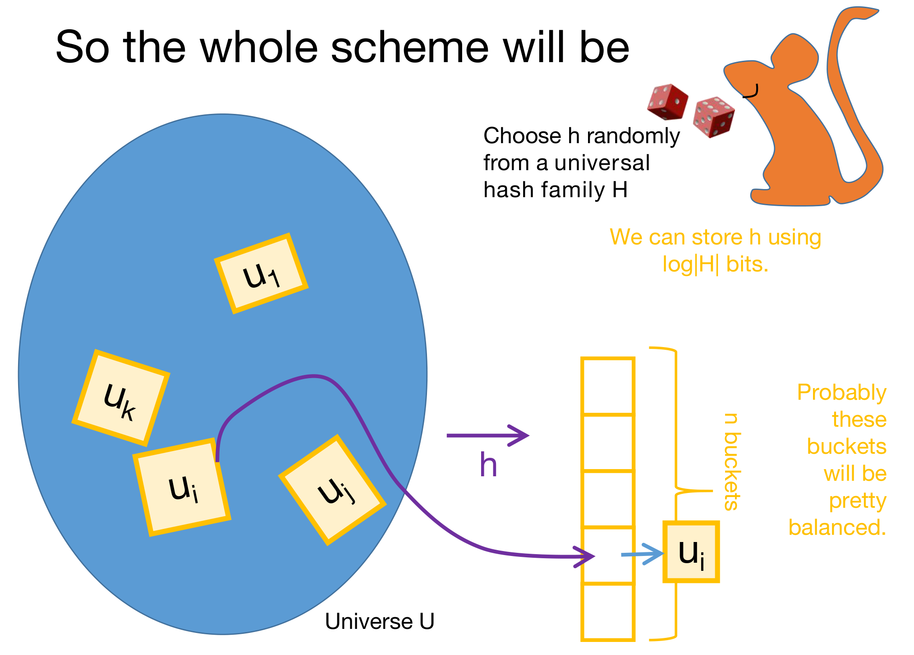
- 유니버설 해시 패밀리 \(H\)에서 \(h\)를 무작위로 고릅니다.
- \(h\)는 \(\log\lvert H\rvert\) 비트로 저장합니다.
- 그 \(h\)로 체이닝 해시 테이블을 운영합니다. 아마도 버킷들은 꽤 균형 잡혀 있을 것입니다.
“아마도(probably)”라는 표현은 보장의 성격을 정확히 반영합니다. 보장되는 것은 기댓값이지, 매번 균형 잡힌다는 것이 아닙니다.
4.5 유니버설 해시 패밀리 (Universal Hash Family)
해시 패밀리 \(H\)가 유니버설 해시 패밀리(universal hash family)라는 것은, \(h\)를 \(H\)에서 균등하게 무작위로 골랐을 때 다음이 성립한다는 뜻입니다.
\[\text{모든 } u_i, u_j \in U \;\;(u_i \ne u_j)\text{에 대해} \qquad P_{h \in H}\{\,h(u_i) = h(u_j)\,\} \;\le\; \frac{1}{n}\]
기호 \(P_{h \in H}\)는 확률이 \(h\)를 \(H\)에서 균등하게 뽑는 것에 대한 것임을 나타냅니다. \(H\)가 유한집합이므로 개수로 바꿔 쓸 수 있습니다.
\[P_{h \in H}\{\,h(u_i) = h(u_j)\,\} \;=\; \frac{\bigl\lvert\{\,h \in H : h(u_i) = h(u_j)\,\}\bigr\rvert}{\lvert H\rvert}\]
곧 어떤 두 키를 골라도, 그 둘을 충돌시키는 함수는 \(H\) 전체의 \(1/n\) 이하라는 조건입니다. 조건이 “모든 쌍”에 대한 것이라는 점이 중요합니다. 적대자가 어떤 쌍을 고르더라도 빠져나갈 수 없어야 하기 때문입니다.
이 정의가 곧바로 §2.19의 조건을 줍니다. §2.21의 계산에서 셋째 줄의 등호를 부등호로 바꾸기만 하면 됩니다.
\[ \begin{aligned} \mathbb{E}\bigl[\,u_i\text{의 버킷에 든 원소의 수}\,\bigr] &= 1 + \sum_{j \ne i} P_{h \in H}\{\,h(u_i) = h(u_j)\,\} \\ &\le 1 + \sum_{j \ne i} \frac{1}{n} \;=\; 1 + \frac{n-1}{n} \;\le\; 2 \end{aligned} \]
따라서 유니버설 해시 패밀리에서 \(h\)를 뽑으면, 적대자의 입력이 무엇이든 모든 연산의 기대 시간이 \(O(1)\)입니다.
4.6 예 (Example)
- \(H\) = 모든 함수 \(h: U \to \{1, \ldots, n\}\)의 집합.
- 앞에서 본 것입니다. 균등 무작위 해시 함수를 뽑는 것에 해당합니다.
- 안타깝게도 이 \(H\)는 정말 정말 큽니다.
§2.21에서 계산한 대로 이 \(H\)에서는 충돌 확률이 정확히 \(1/n\)이므로 정의를 만족합니다. 유니버설하기는 하지만 작지 않습니다(\(\lvert H\rvert = n^M\)).
4.7 반례 (Non-example)
- \(h_0\) =
Most_significant_digit - \(h_1\) =
Least_significant_digit - \(H = \{h_0, h_1\}\)
이것은 유니버설 해시 패밀리가 아닙니다.
\[P_{h \in H}\{\,h(101) = h(111)\,\} \;=\; 1 \;>\; \frac{1}{10}\]
- \(h_0(101) = 1 = h_0(111)\)이고 \(h_1(101) = 1 = h_1(111)\)입니다. \(H\)의 두 함수가 모두 이 쌍을 충돌시키므로 확률이 1입니다.
- 버킷이 열 개(\(n = 10\))이므로 유니버설하려면 이 확률이 \(1/10\) 이하여야 합니다.
- 정의를 어기는 데에는 쌍 하나면 충분합니다. §3.4의 적대자는 이런 쌍들로만 이루어진 입력을 만든 것입니다.
4.8 작은 유니버설 해시 패밀리?? (A Small Universal Hash Family??)
작으면서 유니버설한 해시 패밀리가 있을까요? 슬라이드는 하나를 내놓습니다.
- 소수(prime) \(p \ge M\)을 하나 고릅니다.
- 다음 두 함수를 정의합니다.
\[f_{a,b}(x) \;=\; ax + b \mod p\]
\[h_{a,b}(x) \;=\; f_{a,b}(x) \mod n\]
- 그리고 해시 패밀리를 다음과 같이 정의합니다.
\[H \;=\; \bigl\{\, h_{a,b}(x) \;:\; a \in \{1, \ldots, p-1\},\;\; b \in \{0, \ldots, p-1\} \,\bigr\}\]
\(H\)는 유니버설 해시 패밀리입니다.
정의를 읽는 데 필요한 것들을 짚어 둡니다.
- 여기서는 키를 정수로 봅니다. \(U\)의 원소에 \(0, 1, \ldots, M-1\)의 번호를 붙였다고 생각하면 됩니다(다음 절의 예도 \(U = \{0, 1, 2, 3, 4\}\)입니다). 문자열 같은 키도 비트열로 읽으면 정수입니다.
- 해시 함수 하나는 두 수 \(a\), \(b\)로 정해집니다. 두 단계를 거칩니다 — 먼저 \(ax + b\)를 \(p\)로 나눈 나머지를 구하고, 그 결과를 다시 \(n\)으로 나눈 나머지를 구합니다.
- \(a\)는 0이 될 수 없습니다. \(a = 0\)이면 \(f_{0,b}(x) = b\)가 되어 모든 키가 같은 값으로 갑니다.
- \(h_{a,b}\)의 값은 \(0, 1, \ldots, n-1\)입니다. 버킷 번호를 \(1, \ldots, n\)으로 매기던 앞의 관례와 맞추려면, 나머지 0을 \(n\)번 버킷으로 읽으면 됩니다.
슬라이드 여백의 글씨는 질문을 하나 남깁니다 — \(M\)보다 너무 크지 않은 소수 \(p\)는 어떻게 고를까요?
슬라이드는 답을 적지 않았지만, 표준적인 사실 하나가 이 걱정을 덜어 줍니다. 베르트랑의 공준(Bertrand’s postulate)에 따르면 1보다 큰 모든 정수 \(M\)에 대해 \(M < p < 2M\)인 소수 \(p\)가 존재합니다.
따라서 \(p\)를 \(2M\) 미만으로 잡을 수 있고, 그러면 \(\log_2 p < \log_2 M + 1\)입니다. §4.10에서 “\(p\)를 \(M\)에 가깝게 골랐으므로 \(O(\log M)\) 비트”라고 할 때 필요한 것이 이것입니다.
4.9 뭐라고요? (Say What?)
정의가 낯설 수 있으므로 작은 예로 따라가 봅니다. \(M = p = 5\), \(n = 3\)입니다.
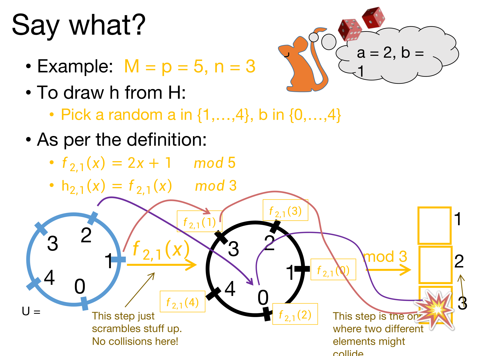
mod 3이 검은 원의 자리를 오른쪽의 버킷 세 개(1, 2, 3)로 보내는데, 갈색 글씨대로 서로 다른 두 원소가 충돌할 수 있는 것은 이 단계입니다. 실제로 분홍 곡선(원소 1, 검은 원의 자리 3)과 보라색 곡선(원소 2, 검은 원의 자리 0)이 같은 3번 버킷에 닿아 폭발 표시가 그려져 있습니다 — 3과 0은 3으로 나눈 나머지가 둘 다 0이기 때문입니다. 원본에서 생각 구름 속의 글과 오른쪽 아래 갈색 글이 줄바꿈되거나 화면 밖으로 잘려 있습니다.- \(H\)에서 \(h\)를 뽑으려면: \(a\)를 \(\{1, \ldots, 4\}\)에서, \(b\)를 \(\{0, \ldots, 4\}\)에서 무작위로 고릅니다. 그림에서는 \(a = 2\), \(b = 1\)이 뽑혔습니다.
- 정의에 따라:
\[f_{2,1}(x) = 2x + 1 \mod 5, \qquad h_{2,1}(x) = f_{2,1}(x) \mod 3\]
다섯 키 모두에 대해 값을 계산하면 다음과 같습니다.
| \(x\) | 0 | 1 | 2 | 3 | 4 |
|---|---|---|---|---|---|
| \(2x + 1\) | 1 | 3 | 5 | 7 | 9 |
| \(f_{2,1}(x) = (2x+1) \bmod 5\) | 1 | 3 | 0 | 2 | 4 |
| \(h_{2,1}(x) = f_{2,1}(x) \bmod 3\) | 1 | 0 | 0 | 2 | 1 |
그림이 강조하는 것은 두 단계의 역할이 다르다는 점입니다.
- 첫 단계(\(\bmod\ p\))는 뒤섞기만 합니다. 여기서는 충돌이 없습니다. 표의 셋째 줄
1, 3, 0, 2, 4는0, 1, 2, 3, 4를 순서만 바꾼 것입니다. 다섯 키가 서로 다른 다섯 자리로 갑니다. - 둘째 단계(\(\bmod\ n\))가 서로 다른 두 원소가 충돌할 수 있는 단계입니다. 다섯 자리를 세 버킷에 넣어야 하므로 충돌은 피할 수 없습니다. 표에서 키 1과 키 2가 둘 다 0으로 가고(그림에서 폭발 표시가 그려진 충돌이며, 그림은 나머지 0을 3번 버킷으로 그렸습니다), 그림에 곡선으로 그려지지는 않았지만 키 0과 키 4도 둘 다 1로 갑니다.
어떤 쌍이 충돌하는지는 \(a\), \(b\)에 따라 달라집니다. 유니버설하다는 것은 어느 쌍도 너무 많은 \((a, b)\)에서 충돌하지는 않는다는 뜻입니다.
4.10 \(h\)는 \(O(\log M)\) 비트로 저장됩니다 (h Takes O(log M) Bits to Store)
- 두 수만 저장하면 됩니다.
- \(a\)는 \(\{1, \ldots, p-1\}\)에 속합니다.
- \(b\)는 \(\{0, \ldots, p-1\}\)에 속합니다.
- 따라서 약 \(2\log(p)\) 비트입니다.
- \(p\)를 \(M\)에 가깝게 골랐으므로, 이것은 \(O(\log(M))\) 비트입니다.
- 게다가 \(a\)와 \(b\)가 주어지면 \(h\)는 빠르게 계산됩니다.
- \(h(x)\)를 계산하는 데 \(O(1)\) 시간이 걸립니다.
- 비교: 직접 주소 지정은 \(M\) 비트였습니다!
- 트위터 예: \(2\log(M) = 2 \cdot 280 \cdot \log(128) = 3920\) 비트 대 \(M = 128^{280}\) 비트.
숫자를 확인해 보겠습니다. 해시 패밀리의 크기는 \(a\)의 가짓수와 \(b\)의 가짓수의 곱입니다.
\[\lvert H\rvert \;=\; (p-1)\cdot p \;<\; p^{2}, \qquad \log_2\lvert H\rvert \;<\; 2\log_2 p\]
\(p < 2M\)으로 잡으면 \(\lvert H\rvert < 4M^2 = O(M^2)\)이고 \(\log_2\lvert H\rvert = O(\log M)\)입니다. 트위터 예에서는 \(\log_2 128 = 7\)이므로 \(\log_2 M = 280 \times 7 = 1960\)이고, 두 수를 저장하는 데 \(2 \times 1960 = 3920\) 비트, 곧 490바이트면 됩니다. 직접 주소 지정이 요구하는 \(2^{1960}\) 비트와는 비교가 되지 않습니다.
\(h(x)\)의 계산은 곱셈 한 번, 덧셈 한 번, 나머지 연산 두 번입니다. 이것을 \(O(1)\)로 세는 것은 키 하나를 상수 번의 기본 연산으로 다룰 수 있다는 계산 모형(§2.3) 아래에서의 이야기입니다.
| 해시 패밀리 | 크기 | \(h\)를 저장하는 비트 | 유니버설한가 |
|---|---|---|---|
| 모든 함수 (코끼리) | \(n^M\) | \(M\log n\) | 예 |
| \(\{h_0, h_1\}\) | 2 | 1 | 아니요 |
| \(\{h_{a,b}\}\) | \(p(p-1) = O(M^2)\) | \(O(\log M)\) | 예 |
4.11 왜 이것이 성립하는가 (Why Does This Work?)
- 이것은 사실 조금 복잡합니다.
- 궁금하면 강의 노트를 보라고 합니다.
- 이 수업에서는 증명에 대해 책임지지 않아도 됩니다.
- 다만 크기 \(O(M^2)\)의 유니버설 해시 패밀리가 존재한다는 것은 알아야 합니다.
슬라이드 여백에는 이것이 유니버설 해시 패밀리임을 직접 증명해 보라는 권유가 적혀 있습니다.
보충: 표준적인 증명
시험 범위 밖이라고는 했지만, 나중에 다시 볼 때를 위해 교과서에 실리는 표준적인 논증을 옮겨 둡니다. 아래의 기호 \(r\), \(s\)는 슬라이드에 없는 것입니다.
서로 다른 두 키 \(x \ne y\) (\(x, y \in \{0, \ldots, M-1\}\))를 고정하고, \((a, b)\)를 \(\{1, \ldots, p-1\} \times \{0, \ldots, p-1\}\)에서 균등하게 뽑는다고 합시다. 첫 단계의 결과를 다음과 같이 씁니다.
\[r = (ax + b) \bmod p, \qquad s = (ay + b) \bmod p\]
1단계: 첫 단계에서는 충돌하지 않습니다 (\(r \ne s\)). 두 식을 빼면 \(b\)가 사라집니다.
\[r - s \;\equiv\; a(x - y) \pmod p\]
\(1 \le a \le p-1\)이므로 \(a\)는 \(p\)의 배수가 아닙니다. \(x \ne y\)이고 둘 다 \(0\) 이상 \(p\) 미만이므로(\(M \le p\)), \(0 < \lvert x - y\rvert < p\)여서 \(x - y\)도 \(p\)의 배수가 아닙니다. \(p\)가 소수이므로 \(p\)의 배수가 아닌 두 수의 곱은 \(p\)의 배수가 아닙니다. 따라서 \(r \ne s\)입니다. §4.9의 그림에서 “이 단계는 뒤섞기만 한다”고 한 것이 이것이며, \(p\)가 소수여야 하는 이유도 여기에 있습니다.
2단계: \((a, b)\)와 \((r, s)\)는 일대일로 대응합니다. \(r \ne s\)인 쌍 \((r, s)\)가 주어지면, 위의 두 식을 \(a\), \(b\)에 대한 연립방정식으로 보고 풀 수 있습니다.
\[a \;=\; (r - s)\,(x - y)^{-1} \bmod p, \qquad b \;=\; (r - ax) \bmod p\]
여기서 \((x-y)^{-1}\)은 법 \(p\)에 대한 곱셈 역원이며, \(p\)가 소수이고 \(x - y\)가 \(p\)의 배수가 아니므로 존재합니다. \((r, s)\)에서 \((a, b)\)를 되찾을 수 있으니, 서로 다른 \((a, b)\)는 서로 다른 \((r, s)\)를 만듭니다. 그런데 가능한 \((a, b)\)는 \((p-1)p\)가지이고, \(r \ne s\)인 \((r, s)\)도 \(p(p-1)\)가지입니다. 따라서 \((a, b)\)를 균등하게 뽑으면 \((r, s)\)는 서로 다른 두 값의 순서쌍 전체에서 균등하게 뽑힙니다.
3단계: 둘째 단계에서 충돌할 확률을 셉니다. \(x\)와 \(y\)가 충돌한다는 것은 \(r \equiv s \pmod n\)이라는 것입니다. \(r\)을 하나 고정합시다. \(\{0, \ldots, p-1\}\) 가운데 \(n\)으로 나눈 나머지가 \(r\)과 같은 수는 많아야 \(\lceil p/n\rceil\)개이고, 그중 \(r\) 자신을 빼면 \(s\)가 될 수 있는 값은 많아야 \(\lceil p/n\rceil - 1\)개입니다.
\[\Bigl\lceil \frac{p}{n} \Bigr\rceil - 1 \;\le\; \frac{p + n - 1}{n} - 1 \;=\; \frac{p - 1}{n}\]
\(s\)는 \(r\)이 아닌 \(p - 1\)개의 값 가운데 균등하게 뽑히므로, 다음을 얻습니다.
\[P_{h \in H}\{\,h(x) = h(y)\,\} \;\le\; \frac{(p-1)/n}{p - 1} \;=\; \frac{1}{n} \qquad \blacksquare\]
§4.9의 예(\(p = 5\), \(n = 3\))로 확인해 볼 수 있습니다. \((a, b)\)는 \(4 \times 5 = 20\)가지이고, \(r \ne s\)인 순서쌍 \((r, s)\)도 20가지입니다. 이 가운데 \(r \equiv s \pmod 3\)인 것은 \((0, 3), (3, 0), (1, 4), (4, 1)\)의 네 가지뿐이므로, 어떤 두 키를 고르든 충돌 확률은 \(4/20 = 1/5\)이고 이것은 \(1/n = 1/3\) 이하입니다.
4.12 그래도 확인은 해 봅시다 (But Let’s Check That It Does Work)
증명을 건너뛴 대신, 슬라이드는 실험 결과를 보여 줍니다. 8강의 Python 노트북을 확인해 보라는 안내와 함께입니다.
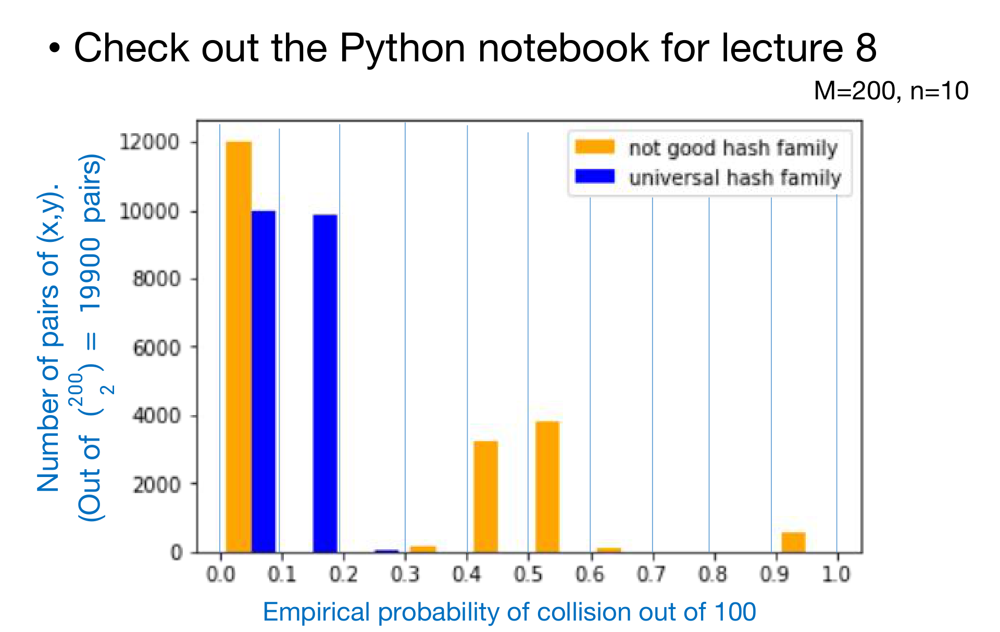
- 설정: \(M = 200\), \(n = 10\). 가능한 쌍 \((x, y)\)는 \(\binom{200}{2} = 19900\)개입니다.
- 가로축은 축 이름대로 “100번 가운데” 잰 경험적 충돌 확률로, 해시 함수를 100번 뽑아 그 쌍이 충돌한 비율로 읽힙니다.
- 유니버설 해시 패밀리(파랑): 모든 쌍이 \(0.1 = 1/n\) 근처에 모여 있습니다. 유난히 자주 충돌하는 쌍이 없습니다.
- 좋지 않은 해시 패밀리(주황): 대부분의 쌍은 거의 충돌하지 않지만, 0.5 근처와 1.0 근처에 쌍들이 수천 개 있습니다.
주황 막대가 평균적으로 나쁜 것이 아니라는 점에 주목할 만합니다. 19,900쌍 가운데 약 12,000쌍은 충돌한 비율이 0.1에도 미치지 못합니다. 문제는 최악의 쌍입니다. 유니버설의 정의가 “평균적인 쌍”이 아니라 “모든 쌍”에 대한 조건인 이유가 이 그림에 그대로 드러납니다. 적대자는 평균적인 쌍을 고르지 않습니다.
슬라이드에는 없는 계산이지만, 막대의 위치와 높이는 다음과 같이 설명됩니다.
- 파란 막대가 0.1의 양쪽으로 갈리는 이유. \(p\)를 200 이상의 가장 작은 소수인 211로 잡으면, §4.11의 3단계와 같은 방식으로 세어 모든 쌍의 충돌 확률이 정확히 \(4242/44310 \approx 0.0957\)입니다. 참값이 0.1 바로 아래이므로, 100번의 시행으로 잰 비율은 표본 오차 때문에 0.1의 아래와 위로 거의 반반씩 갈립니다.
- 주황 막대가 세 무리로 나뉘는 이유. 슬라이드는 “좋지 않은 해시 패밀리”가 무엇인지 밝히지 않았지만, 막대의 높이는 §3의 \(H = \{h_0, h_1\}\)을 \(U = \{0, \ldots, 199\}\)에 적용한 경우와 맞아떨어집니다. 직접 세어 보면 두 함수 어느 쪽에서도 충돌하지 않는 쌍이 12,024개(확률 0), 한쪽에서만 충돌하는 쌍이 7,307개(확률 \(1/2\)), 양쪽 모두에서 충돌하는 쌍이 569개(확률 1)입니다.
4.13 전체 구조, 다시 (So the Whole Scheme Will Be)
§4.4의 슬라이드가 구체적인 모습으로 다시 나옵니다. 그림의 구성이 §4.4와 같아 다시 싣지는 않았고, 바뀐 글만 비교하면 다음과 같습니다.
| §4.4의 슬라이드 | 이번 슬라이드 | |
|---|---|---|
| 뽑는 방법 | 유니버설 해시 패밀리 \(H\)에서 \(h\)를 무작위로 고른다 | \(a\)와 \(b\)를 무작위로 골라 함수 \(h_{a,b}\)를 만든다 |
| 저장 | \(h\)를 \(\log\lvert H\rvert\) 비트로 | \(a\)와 \(b\)만 저장하면 되므로 \(O(\log(M))\)의 공간으로 |
| 결과 | 아마도 버킷들은 꽤 균형 잡혀 있을 것이다 | 같음 |
이번 슬라이드에는 전체집합 \(U\) 옆에 악당을 상징하는 영화 속 악역의 사진이 덧붙어 있습니다. \(U\)에서 원소를 고르는 것이 적대자의 몫이고, 그 적대자가 누구든 이 구조가 버틴다는 뜻으로 읽힙니다.
5. 되짚어보기 (Recap)
개요 슬라이드가 마지막으로 나타나고, 화살표가 세 항목 아래의 Recap을 가리킵니다. 이어지는 슬라이드들은 강의의 흐름을 처음부터 다시 짚습니다.
5.1 \(O(1)\) INSERT/DELETE/SEARCH를 원합니다 (Want O(1) INSERT/DELETE/SEARCH)
- 키를 가진 노드들을, 빠른 INSERT/DELETE/SEARCH를 지원하는 자료구조에 넣는 데 관심이 있습니다.
§2.1의 구름 그림이 그대로 다시 나옵니다. 달라진 것은 제목에 목표가 \(O(1)\)로 명시되었다는 점입니다.
5.2 우리가 살펴본 게임 (We Studied This Game)
- 적대자가 임의의 \(n\)개 원소 \(u_1, u_2, \ldots, u_n \in U\)와, 그 원소들에 대한 \(L\)개의 INSERT/DELETE/SEARCH 연산의 임의의 순서를 고릅니다.
- 알고리즘이 무작위 해시 함수 \(h: U \to \{1, \ldots, n\}\)을 고릅니다.
- 실제로 해싱합니다.
§2.16의 그림과 같고, 연산의 개수에 \(L\)이라는 이름이 붙었습니다. 연산 하나의 기대 시간이 \(O(1)\)이면, 기댓값의 선형성에 의해 \(L\)개 연산 전체의 기대 시간은 \(O(L)\)입니다.
5.3 균등 무작위 \(h\)는 좋았습니다 (Uniformly Random h Was Good)
- \(h\)를 균등하게 무작위로 고르면,
\[\text{모든 } u_i, u_j \in U \;\;(u_i \ne u_j)\text{에 대해} \qquad P_{h \in H}\{\,h(u_i) = h(u_j)\,\} \;\le\; \frac{1}{n}\]
- 이것만으로 모든 INSERT/DELETE/SEARCH 연산이, 적대적인 입력에 대해서조차, 기대 시간 \(O(1)\)에 끝난다는 것을 보장하기에 충분했습니다.
5.4 균등 무작위 \(h\)는 나빴습니다 (Uniformly Random h Was Bad)
- 이것을 실제로 구현하려면 해시 함수 \(h\)를 저장해야 합니다.
- 그것은 공간을 많이 차지합니다!
- 그럴 바에야 \(U\)의 원소 하나하나마다 버킷을 마련하는 편이 나았을 것입니다.
- 그 대신, 우리는 더 작은 집합에서 함수를 무작위로 골랐습니다.
슬라이드에는 코끼리(모든 해시 함수)와 그 옆의 작은 주황색 쥐가 다시 그려져 있습니다.
5.5 유니버설 해시 패밀리 (Universal Hash Families)
\(H\)가 유니버설 해시 패밀리라는 것은 다음을 뜻합니다.
- \(h\)를 \(H\)에서 균등하게 무작위로 고르면,
\[\text{모든 } u_i, u_j \in U \;\;(u_i \ne u_j)\text{에 대해} \qquad P_{h \in H}\{\,h(u_i) = h(u_j)\,\} \;\le\; \frac{1}{n}\]
슬라이드는 이 정의 옆에 적어 둡니다 — 버킷들이 기댓값으로 균형 잡히도록 하는 데 필요했던 것은 이것이 전부였습니다!
- 우리는 정말 작은 유니버설 해시 패밀리의 예를 보았습니다. 크기가 \(O(M^2)\)입니다.
- 그래서 해시 함수를 저장하는 데 \(O(\log M)\) 비트면 됩니다.
5.6 결론 (Conclusion)
슬라이드는 먼저 설정을 다시 밝힙니다 — 크기 \(M\)인 전체집합을 \(n\)개의 버킷으로 해싱하며, 전체집합의 원소 가운데 많아야 \(n\)개가 실제로 등장합니다.
- INSERT/DELETE/SEARCH를 기대 시간 \(O(1)\)에 지원하는 해시 테이블을 만들 수 있습니다.
- 필요한 공간은 \(O(n\log(M))\) 비트입니다.
- 버킷 \(O(n)\)개
- 원소 \(O(n)\)개, 원소마다 \(\log(M)\) 비트
- 해시 함수를 저장하는 데 \(O(\log(M))\) 비트
세 항목을 더하면 공간이 나옵니다.
- 원소: \(U\)의 원소 하나를 다른 원소와 구별해 적으려면 \(\log M\) 비트가 필요합니다(§2.28의 기술 길이). 그런 원소가 많아야 \(n\)개이므로 \(O(n\log M)\) 비트입니다.
- 버킷: 버킷 하나는 리스트의 첫 노드를 가리키는 포인터입니다. 노드가 많아야 \(n\)개이므로 포인터 하나는 \(O(\log n)\) 비트면 되고, \(n \le M\)이므로 이것은 \(O(\log M)\) 이하입니다. 버킷 \(n\)개를 합쳐도 \(O(n\log M)\) 비트를 넘지 않습니다. 리스트 안의 포인터들도 마찬가지입니다.
- 해시 함수: \(O(\log M)\) 비트(§4.10).
\[O(n\log M) + O(n\log M) + O(\log M) \;=\; O(n\log M)\]
강의에 등장한 세 가지 방법을 나란히 놓으면 다음과 같습니다.
| 방법 | 공간 (비트) | 연산 하나의 시간 |
|---|---|---|
| 직접 주소 지정 | \(M\) | \(O(1)\) (최악의 경우에도) |
| 균등 무작위 해시 함수 + 체이닝 | \(h\)를 적는 데에만 \(M\log n\) | 기대 \(O(1)\) |
| 유니버설 해시 패밀리 + 체이닝 | \(O(n\log M)\) | 기대 \(O(1)\) |
공간이 \(M\)에 비례하던 것이 \(\log M\)에 비례하게 되었습니다. 트위터 예로 말하면 \(2^{1960}\) 비트가, 저장하는 키 하나당 1,960비트의 상수배로 줄어든 것입니다. 그 대가는 보장의 성격이 “언제나”에서 “기댓값으로”로 바뀐 것입니다(§2.2).
5.7 자료구조는 (일단) 여기까지 (That’s It for Data Structures (for Now))
슬라이드는 게임의 업적 달성 알림을 흉내 낸 그림을 보여 줍니다 — 업적 달성: 자료구조 — 레드-블랙 트리와 해시 테이블. 그리고 덧붙입니다 — 이제 앞으로 이것들을 쓸 수 있습니다!
지난 강의와 이번 강의에서 만든 두 자료구조는 앞으로의 알고리즘에서 내부를 다시 들여다볼 필요 없이 부품으로 쓰입니다.
| 자료구조 | INSERT / DELETE / SEARCH | 보장의 성격 |
|---|---|---|
| 레드-블랙 트리 (7강) | \(O(\log n)\) | 결정적, 최악의 경우 |
| 해시 테이블 (8강) | \(O(1)\) | 기대 시간 |
5.8 다음 시간 (Next Time)
- 그래프 알고리즘(graph algorithms)!
마지막 슬라이드에는 Before Next Time이라는 제목도 있지만, 이 PDF에서는 그 아래가 비어 있습니다.
정리하며 (Closing Remarks)
이번 강의의 논증 사슬을 단계별로 압축하면 다음과 같습니다.
| 단계 | 내용 | 근거 |
|---|---|---|
| ① 목표 | 키를 가진 노드를 저장하며 INSERT/DELETE/SEARCH를 \(O(1)\)에 — 자가 균형 트리의 결정적 \(O(\log n)\)보다 빠르게, 다만 기대 시간으로 | Goal, Last time / Today |
| ② 직접 주소 지정 | 키 \(k\)를 \(k\)번 버킷에 넣으면 세 연산이 \(O(1)\)이지만, 버킷이 전체집합의 크기 \(M\)만큼 필요하다 | CountingSort와 같은 문제 |
| ③ 해시 함수와 체이닝 | \(h: U \to \{1, \ldots, n\}\)으로 \(n\)개의 버킷에 나눠 담고 충돌은 연결 리스트로 잇는다 — 연산 시간은 그 키의 버킷에 달린 리스트의 길이다 | 일의 자리 숫자 예시 |
| ④ 결정적 \(h\)의 한계 | 어느 버킷에는 \(M/n \ge n\)개가 해싱되므로, 악당이 그중 \(n\)개를 고르면 연산이 \(\Theta(n)\)이 된다 | 비둘기집 원리 |
| ⑤ 게임 | 적대자가 입력을 먼저 정하고, 그 뒤에 알고리즘이 \(h\)를 무작위로 뽑는다 | The game |
| ⑥ 올바른 조건 | 모든 \(i\)에 대해 \(\mathbb{E}[u_i\text{의 버킷에 든 원소의 수}] \le 2\) — 버킷 \(i\)를 기준으로 한 조건과는 다르다 | 모든 키를 같은 무작위 버킷에 보내는 예 |
| ⑦ 균등 무작위 \(h\)의 분석 | 기댓값의 선형성으로 \(1 + \sum_{j \ne i} 1/n = 1 + \frac{n-1}{n} \le 2\)이고, 따라서 연산의 기대 시간은 \(O(1)\)이다 | 지시 확률변수, 충돌 확률 \(1/n\) |
| ⑧ 균등 무작위 \(h\)의 비용 | 함수가 \(n^M\)개라 하나를 적는 데 \(M\log n\) 비트가 들며, 직접 주소 지정(\(M\) 비트)보다도 나쁘다 | 룩업 테이블, 기술 길이 \(b \ge \log s\) |
| ⑨ 해시 패밀리 | 작은 부분집합 \(H\) 안에서 뽑으면 \(\log\lvert H\rvert\) 비트면 된다 | 코끼리 속의 쥐 |
| ⑩ 아무 \(H\)나 되지는 않는다 | \(H = \{h_0, h_1\}\)은 101, 11, 121, 141, 131에 무너진다 — 주사위가 무엇을 내든 상관없는 입력이 있다 |
This is not a very good hash family |
| ⑪ 유니버설 해시 패밀리 | ⑦이 쓴 것은 쌍별 충돌 확률이 \(1/n\) 이하라는 조건뿐이므로, 그것을 정의로 삼는다 | 분홍 타원으로 표시한 항 |
| ⑫ 작은 유니버설 패밀리 | \(h_{a,b}(x) = ((ax + b) \bmod p) \bmod n\)은 크기 \(p(p-1) = O(M^2)\)의 유니버설 해시 패밀리이며, \(O(\log M)\) 비트로 저장되고 \(O(1)\)에 계산된다 | Claim, \(M = p = 5\) 예시, 실험 그래프 |
| ⑬ 결론 | \(O(n\log M)\) 비트의 공간으로 기대 시간 \(O(1)\)의 INSERT/DELETE/SEARCH를 얻는다 | Conclusion |